Cap. 12 ANOVA
Objetivos do capítulo
1. Apresentar a ANOVA
2. Discutir seus diferentes tipos, incluindo ANOVA de 1 via, 2 vias e Fatorial
3. Apresentar gráficos e tabelas com comparações de grupos
4. Apresentar e discutir testes Post hoc
5. Dar exemplos relacionados à escrita dos resultados
GLOSSÁRIO
ANOVA: Análise da variância.
Via: Variável independente, variável fonte, variável preditora, tratamento.
Fator: Sinônimo de via.
Desfecho: Variável dependente, variável critério.
Níveis: Grupos, classes, condições, categorias da variável independente.
Efeito principal: Efeito da variável independente em questão (controlanddo pelas outras no modelo).
Efeito de interação: Efeito do termo de interação entre duas ou mais variáveis independentes. Quando significativo, não se interpreta os efeitos principais.
Efeito simples: Efeito de uma variável independente em um nível (específico) de outra variável independente.
ANCOVA: Análise de covariância, onde se controla os resultados por uma variável contínua.
MANOVA: Análise multivariada de variância, onde se estende a ANOVA para incluir duas variáveis dependentes. É um modelo multivariado.
A ANOVA representa um conjunto de procedimentos estatísticos muito utilizado para verificar diferenças médias entre diversos grupos e, portanto, é considerada um procedimento paramétrico. Pragmaticamente, é possível entender ANOVA como um super Teste T ou também um caso particular de um modelo de regressão. Uma vez que a ANOVA verifica a diferença entre todos os grupos e combinações lineares de maneira simultânea, ela é classificada como um Omnibus test. A relação entre a ANOVA e o Teste T será abordado na seção Post hoc.
Alguns autores indicam que a ANOVA é a técnica inferencial mais utilizada em Psicologia (Chartier & Faulkner, 2008). Se por um aspecto, isso é extremamente vantajoso, uma vez que estreita a relação entre Psicologia e Estatística; por outro, isso parece ter contribuído para criação e manutenção de diferentes conceitos equivocados sobre a ANOVA.
Conceitualmente, a ANOVA é um modelo linear, tal que:
\[y_i = b_0 + b_1X{_1}_i + \dots + b_pX{_p}_i + e_i\]
\(y_i\) representa a variável dependente
\(b_0\) é o intercepto (coeficiente linear)
\(b_p\) é a inclinação (coeficiente angular)
\(X_p\) é a variável independente em questão
\(e_i\) é o erro/resíduo
Os seguintes pressupostos dos modelos lineares são mantidos, que são:
(i) Os dados são aleatórios e representativos da população
(ii) A variável dependente é contínua
(iii) Os resíduos são normalmente distribuídos
(iv) Os resíduos são independentes uns dos outros
(v) A variância dos resíduos é constante
Operacionalmente, o erro representa todos os fatores de pesquisa e problemas de medição que afetam o resultado, além das variáveis independentes consideradas na modelagem.
Atenção: Diferente de outros modelos, a linearidade dos resíduos não é formalmente um pressuposto a ser testado na ANOVA. Isso ocorre pela VI ser categórica em vez de contínua.
Eventualmente, quando os pressupostos do modelo são violados, a literatura mais tradicional recomenda que ajustes ou testes não-paramétricos com propostas parecidas possam ser implementados. A tabela abaixo concatena os testes estatísticos relacionados para fins de comparação com outros trabalhos. Há também autores que sugerem que se use sempre as versões não-paramétricas em resultados obtidos por processos de avaliação psicológica, argumentando que os dados têm nível de medida “ordinal.”
Eventualmente, quando os pressupostos do modelo são violados, a literatura mais tradicional recomenda que ajustes ou testes não-paramétricos com propostas parecidas possam ser implementados. A tabela abaixo concatena os testes estatísticos relacionados para fins de comparação com outros trabalhos. Há também autores que sugerem que se use sempre as versões não-paramétricas em resultados obtidos por processos de avaliação psicológica, argumentando que os dados têm nível de medida “ordinal.”
| Estatística | Um ou mais fatores | Medidas repetidas |
|---|---|---|
| Paramétrica | ANOVA de k via(s)/Fatorial | ANOVA de medidas repetidas |
| Não-paramétrica | Kruskal-Wallis | Teste de Friedman ou Page |
Por heurística, se escreve os delineamentos estudados por uma ANOVA com \(\eta\). Por exemplo, se o interesse for verificar o efeito da escolaridade (fundamental, médio e superior) em um determinado desfecho, isso é entendido como uma ANOVA de 1 via. Caso o interesse seja verificar o efeito da escolaridade, mas também do sexo (masculino ou feminino), a representação será \(\eta = 3 \times 2\). Isso significa que a ANOVA tem dois fatores (escolaridade e sexo), o primeiro fator tem três níveis e o segundo tem 2 níveis.
A tabela a seguir resume as denominações encontradas na literatura:
| VDs | Uma VI | 2 ou mais VIs (sem interação) | 2 ou mais VIs (com interação) |
|---|---|---|---|
| 1 VD | ANOVA de 1 via (one way) |
ANOVA 2 (ou mais) vias (multi way) |
ANOVA Fatorial |
| 2 ou mais | MANOVA |
12.1 Pesquisa
A base desta pesquisa está disponível em formato R (Rdata) e em CSV, que é lido pelo JASP. Clique na opção desejada.
Base R: Livro - R - TEG
Base JASP: Base CSV - base_csv_teg_processed
Neste capítulo, vamos utilizar a pesquisa intitulada “A relação entre o nível de Empreendedorismo (TEG) e os aspectos sociodemográficos dos Taxistas cooperados da cidade de Santo André/São Paulo, Brasil”, publicada em 2016 na Revista Eletrônica de Gestão e Serviços, em que sou coautor. O objetivo dessa pesquisa foi identificar o nível de empreendedorismo em 147 taxistas de Santo André/SP, bem como averiguá-lo em associação aos aspectos sociodemográficos. Muitas perguntas teóricas foram feitas neste trabalho e uma foi verificar o quanto os níveis de escolaridade poderiam impactar o empreendedorismo.
12.2 ANOVA de 1 via
Em uma ANOVA de 1 via, há apenas um fator com três ou mais níveis. Conceitualmente, temos:
\[y_i = b_0 + b_1X{_1}_i + e_i\]
\(y_i\) representa a variável dependente
\(b_0\) é o intercepto (coeficiente linear)
\(X_1\) é a variável independente em questão
\(b_1\) é a inclinação (coeficiente angular)
\(e_i\) é o erro/resíduo
A pergunta que temos neste trabalho é sobre o possível efeito da escolaridade (fundamental, médio, etc) na Tendência Empreendedora Geral (teg).
12.3 Execução no R
Ao trabalhar no R, é fundamental se certificar que os tipos das variáveis estão corretamente definidos em função da escala de medida utilizada. Erros nessa etapa podem gerar resultados absolutamente incorretos. A escolaridade é uma variável categórica (ordinal, tratada como discreta) e é necessário definir claramente isso ao R antes da análise propriamente dita.
Atenção: Tenha atenção à codificação computacional que o R atribuiu à variável de interesse. Erros nesta etapa podem impactar severamente os resultados.
Isso pode ser feito pela função case_when e levels. O case_when irá usar os valores originalmente presentes nessa variável para computar uma nova variável categórica. O levels deixará claro a ordem de cada categoria, o que é útil para que os gráficos sejam feitos corretamente.
Uma vez que os itens de um instrumento sociodemográfico devem levar em consideração o contexto das pessoas avaliadas as categorias de escolaridade foram definidas da seguinte maneira: Primário significa escolaridade até o 5º ano, ginásio significa escolaridade até o 9º ano e colegial é equivalente ao ensino médio.
dados_teg <- dados_teg %>%
mutate(escolaridade_fct = factor(case_when(
escolaridade == 1 ~ "primario",
escolaridade == 2 ~ "ginasio",
escolaridade == 3 ~ "Colegial",
escolaridade == 4 ~ "superior"),
levels=c("primario","ginasio","Colegial","superior")))Os resultados descritivos devem ser calculados. A média irá apresentar a concentração dos dados, enquanto o desvio-padrão apresentará o afastamento dos valores em torno da respectiva média.
dados_teg %>%
group_by(escolaridade_fct) %>%
summarise_at(vars(teg), lst(n=~n(),mean,sd)) %>%
pander() | escolaridade_fct | n | mean | sd |
|---|---|---|---|
| primario | 6 | 24.67 | 4.633 |
| ginasio | 33 | 26.76 | 3.857 |
| Colegial | 85 | 28.87 | 4.108 |
| superior | 23 | 31.83 | 5.228 |
Tal como ilustrado no decorrer dos outros capítulos, gráficos são fundamentais para entendimento do relacionamento entre as variáveis. Uma vez que a escolaridade (VI) é tratada como discreta e a TEG (VD) é contínua, um gráfico de barras é adequado. A inclusão das barras de erro permite uma compreensão inferencial inicial.
ggplot(dados_teg, aes(x=escolaridade_fct, y = teg, fill = escolaridade_fct)) +
geom_bar(stat = "summary", fun = mean) +
stat_summary(fun.data = mean_se, geom = "errorbar") +
theme(legend.position = "none")
Ambos os resultados já permitem identificar algumas características gerais. Primeiro, quão maior a escolaridade, maior o valor obtido na escala. Segundo, algumas barras de erros estão superpostas e outras não, o que nos leva à conclusão preliminar de que resultados significativos estarão presentes na próxima etapa, que é a modelagem formal dessa hipótese.
Para realizar a ANOVA, é possível contar com a função lm ou aov. Aqui, a escolha da lm foi apenas por conveniência e o vetor mod_escolaridade irá armazenar os resultados.
mod_escolaridade <- lm(teg ~ escolaridade_fct, dados_teg)Para apresentação, a função apa.aov.table do pacote apatables pode ser utilizada. Este pacote gera uma tabela parecida com a dos programas estatísticos comerciais e apresenta os principais elementos interpretáveis de uma ANOVA. A tabela a seguir sintetiza tais características.
| Fonte de variação | Soma dos Quadrados | Graus de liberdade | Quadrado médio | Estatística F |
|---|---|---|---|---|
| Fator | Entre (SSB) | K-1 | MSB = SSB/(K-1) | F = MSB/MSW |
| Resíduo | Dentro (SSW) | N-K | MSW = SSW/(N-K) | |
| Total | Total (SQT) | N-1 |
Aqui, K significa quantidade de categorias dentro de um fator e N significa a quantidade de observações consideradas. As siglas em inglês são utilizadas para apresentar a “Soma dos quadrados entre os grupos” (SSB), “Soma dos quadrados dentro dos grupos” (SSW), “Quadrado médio entre grupos” (MSB) e “Quadrado médio dentro dos grupos” (MSW).
apaTables::apa.aov.table(mod_escolaridade)$table_body %>% pander(., split.table = Inf)| Predictor | SS | df | MS | F | p | partial_eta2 | CI_90_partial_eta2 |
|---|---|---|---|---|---|---|---|
| (Intercept) | 3650.67 | 1 | 3650.67 | 200.61 | .000 | ||
| escolaridade_fct | 449.33 | 3 | 149.78 | 8.23 | .000 | .15 | [.06, .22] |
| Error | 2602.27 | 143 | 18.20 |
Existe uma convenção utilizada para apresentar os resultados expostos na tabela acima, que é:
\[F(df_{between}, \, df_{within}) = F, P, \eta^2, 90\% \,CI \, [min, \, max]\]
Neste caso, como há 4 grupos de escolaridade, \(df_{between}: 4-1=3\). No total, 147 participantes apresentam dados completos e portanto \(df_{within}: 147-4 = 143\). Com isso, a apresentação fica F(3,143) = 8.23, p < 0.01, \(\eta_p^2\) = 0.15, 90% CI [.06, .22]. A última parte do resultado é uma medida de tamanho do efeito, que terá a interpretação apresentada e discutida na próxima seção.
Atenção: Jamais apresente p = 0.00. Apresente até 3 casas decimais no valor de P ou, quando necessário, apresente p < 0.001.
Pelos resultados, é possível inicialmente concluir que existe um efeito significativo da escolaridade nos resultados da TEG. Como a ANOVA é um omnibus test, ainda não é possível identificar em qual dos níveis ou combinações este efeito ocorre, o que será feito em momento oportuno.
Atenção: A validade das inferências dos resultados depende da adequação ou não dos pressupostos dos testes estatísticos. A avaliação destas condições é parte de um procedimento diagnóstico que deve ser sempre feito.
Um aspecto importante é que a validade da interpretação dos resultados depende dos pressupostos do modelo estatístico. A violação destes pressupostos distorce, limita ou invalida as interpretações teóricas propostas, uma vez que tanto o aumento do erro do tipo 1 (falso positivo), como do tipo 2 (falso negativo) podem ocorrer (Barker & Shaw, 2015; Ernst & Albers, 2017; Lix et al., 1996). Corriqueiramente, testar os pressupostos é uma etapa anterior à própria realização do teste inferencial. Entretanto, pedagogicamente a apresentação deles após a execução do teste parece mais adequada. Assim, eles serão testados a seguir.
Normalidade: A ANOVA tem como um dos pressupostos a normalidade da distribuição dos resíduos. Isso pode ser feito de diferentes maneiras e abaixo há um QQ plot. Caso ambas as linhas estejam sobrepostas, isso gera evidências que o pressuposto foi atendido. Neste caso, se nota que os desvios não foram tão acentuados, apesar de existirem. Se a análise fosse apenas via QQ plot, provavelmente se consideraria este pressuposto como atendido.
olsrr::ols_plot_resid_qq(mod_escolaridade)
Além da apresentacão gráfica, existem testes estatísticos desenvolvidos especificamente para tal finalidade. Entre eles, há o Shapiro-wilk, Anderson-Darling e Jarque Bera. A hipótese nula de todos estes testes considera que os resíduos são normalmente distribuídos.
shapiro.test(residuals(mod_escolaridade))##
## Shapiro-Wilk normality test
##
## data: residuals(mod_escolaridade)
## W = 0.97502, p-value = 0.008721De maneira diferente à conclusão gráfica, o teste concluiu pela rejeição da normalidade.
Homocedasticidade: Este pressuposto pode ser testado por um gráfico dos resíduos contra os valores previstos. O ideal é não encontrar padrões no gráfico, tal como o gráfico a seguir.
olsrr::ols_plot_resid_fit(mod_escolaridade)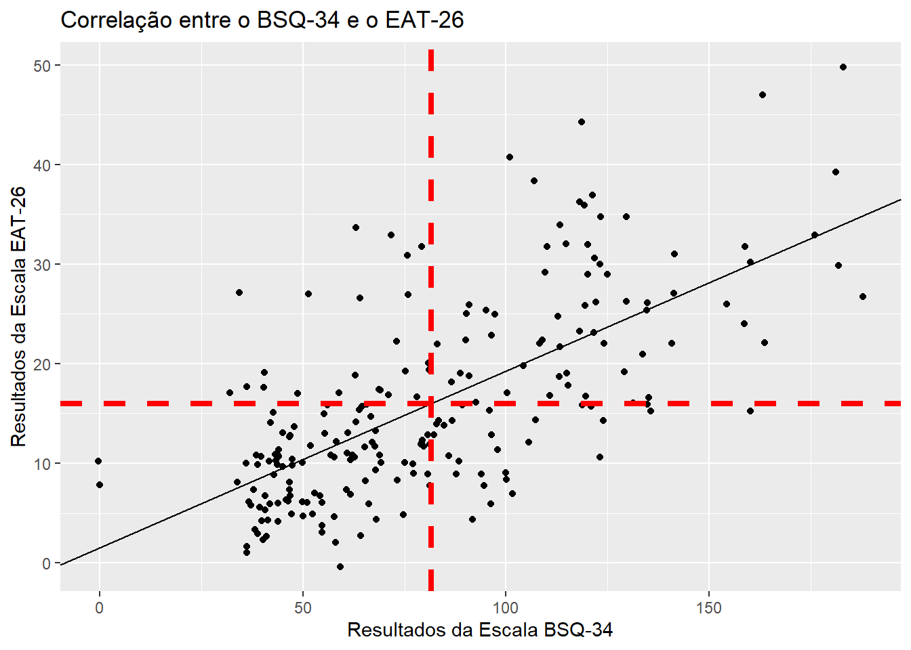
O teste de Levene, de Bartlett ou de Breusch-Pagan podem também serem utilizados de maneira formal. Eles estipulam \(H_0\) como homocedasticidade que, idealmente, não deve ser rejeitada.
car::leveneTest(mod_escolaridade)## Levene's Test for Homogeneity of Variance (center = median)
## Df F value Pr(>F)
## group 3 1.1372 0.3362
## 143Os resultados indicaram que a homocedasticidade foi preservada.
Independência: Esse pressuposto frequentemente não é testado na ANOVA, apesar de ser uma exigência dos modelos lineares. De fato, uma vez que se espera que os grupos sejam mutuamente excludentes, teria pouco sentido acreditar que os resíduos não fossem independentes.
Após esses procedimentos feitos, é necessário calcular o tamanho do efeito.
12.4 Tamanho do efeito
Resultados significativos não são informativos em relação ao tamanho do efeito. Esta última métrica tem mais contato com as perguntas originalmente realizadas em uma pesquisa e é entendida como uma medida objetiva e padronizada da magnitude de um efeito observado independente da significância estatística. Dessa maneira, o tamanho do efeito pode ser considerado um indicador da relevância clínica dos grupos, cujo uso é sempre importante em pesquisas em Psicologia e áreas da saúde.
No ambiente da ANOVA, 3 medidas costumam ser utilizadas para tamanho do efeito, que são:
eta quadrado (\(\eta^2\)),
eta quadrado parcial (\(\eta_p^2\)) e
ômega quadrado (\(\omega^2\)).
A ideia dessas medidas é verificar a variância explicada que o modelo testado apresenta quando comparado com um modelo simples, que conta apenas com a média. Em uma ANOVA de uma via, o \(\eta^2\) e o \(\eta_p^2\) possuem o mesmo valor. Esses conceitos serão revisitados no capítulo de regressão linear.
No caso de agora, o \(\eta^2\) e o \(\eta_p^2\) indicam a proporção da variabilidade dos resultados do TEG que pode ser atribuídos à escolaridade.
A interpretação pode ser feita da seguinte maneira:
| ηp2 | Interpretação |
|---|---|
| ηp2 < 0.01 | Irrelevante |
| ηp2 \(\geq\) 0.01 | Pequeno |
| ηp2 \(\geq\) 0.06 | Moderado |
| ηp2 \(\geq\) 0.14 | Grande |
O tamanho do efeito foi calculado automaticamente pelo R e está na tabela anterior.
12.5 Execução no JASP
A base utilizada será a intitulada base_csv_teg_processed. A primeira etapa da análise é a adequação das variáveis que serão trabalhadas. Isso é importante para criação de tabelas e gráficos. Para ajustar a ordenação dos níveis de Escolaridade, será necessário clicar no centro da variável escolaridade_fct, selecionar o grupo desejado (no caso, primário) e clicar na seta para que ele seja o primeiro grupos.
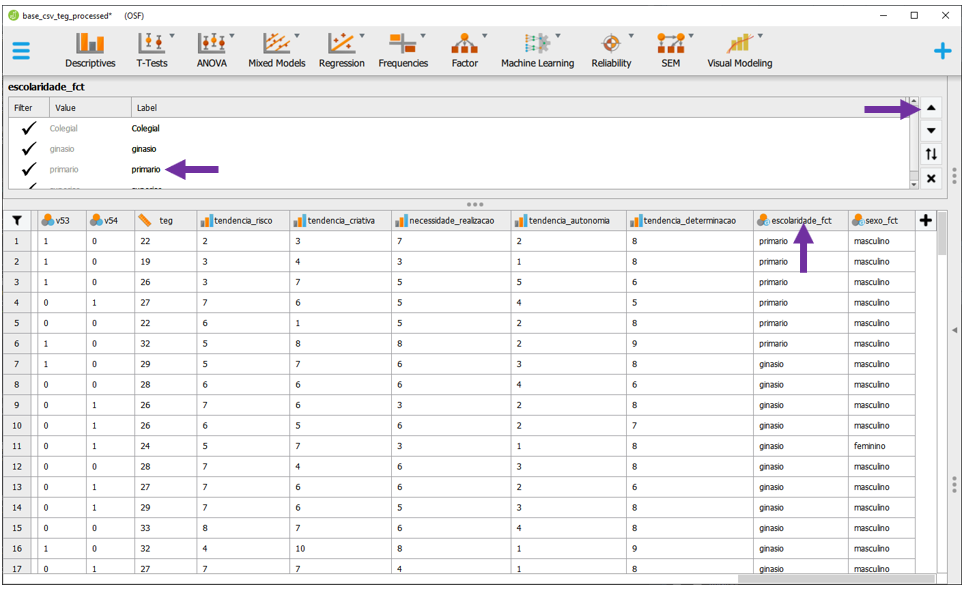
A ordem dos níveis deve ser a utilizada durante a pesquisa: primário, ginásio, colegial e superior. É importante relembrar que esses termos se dão em função do público que foi avaliado nessa pesquisa. Para fechar esta parte superior, basta clicar no X embaixo das setas, destacado no quadrado roxo.
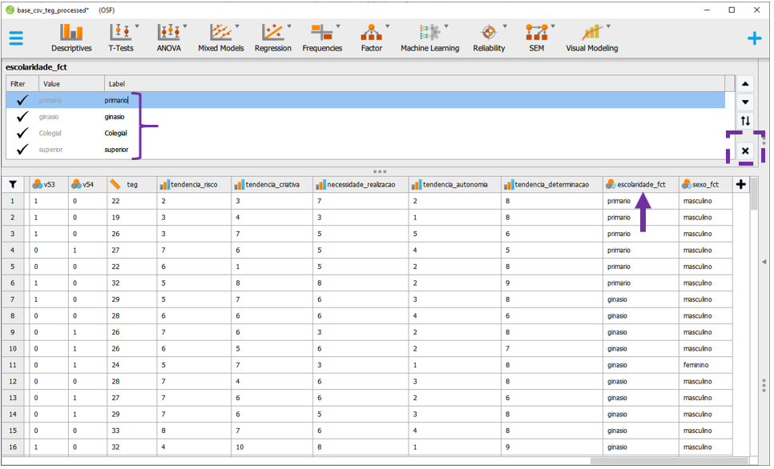
Após feito isso, da mesma forma que foi feita no R, a apresentação de tabelas e gráficos auxiliam o pesquisador a verificar padrões nos dados. Para fazer os gráficos, é necessário clicar em Descriptives.
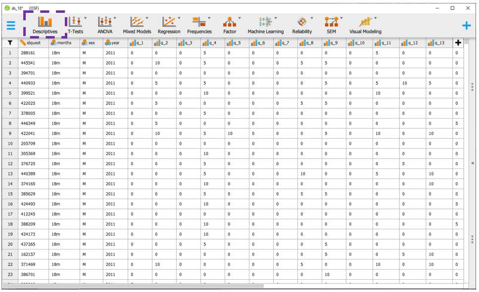
Ao clicar nesta opção, será possível eleger as variáveis que irão ser analisadas e as variáveis que irão funcionar como agrupadoras. Na prática, a lista Variables irá reunir as variáveis dependentes, enquanto a variável independente será colocada na seção Split. É importante atentar à opção Frequency tables (nominal and ordinal), que deve ser marcada quando o nível de medida da variável de interesse for nominal ou ordinal.

Agora é necessário arrastar as variáveis de interesse aos seus respectivos locais. Neste caso, o teg para parte das VDs, enquanto escolaridade_fct para a VI. Ao fazer isso, o JASP automaticamente irá preencher a tabela previamente exposta com os valores estatísticos obtidos. A média e o desvio-padrão indicam a posição típica dos dados e o afastamento esperado desta localização.
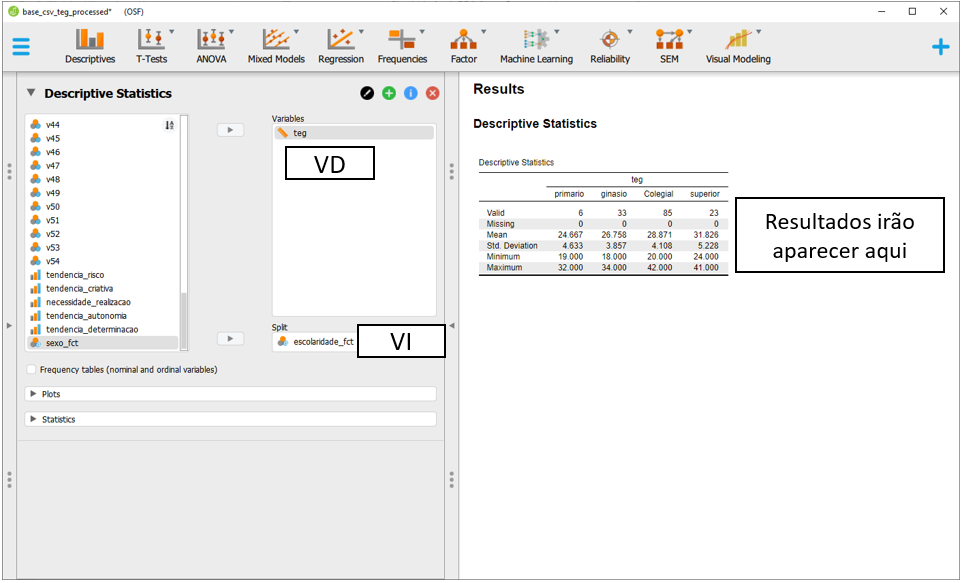
Em seguida, ao clicar na opção Plots, será possível selecionar o Boxplot e Boxplot element. O gráfico aparecerá abaixo da tabela e irá apresentar diferentes informações estatísticas da distribuição dos resultados de empreendedorismo em função dos níveis de escolaridade.

Os resultados tabulares e gráficos são idênticos. Preliminarmente, as evidências sugerem que pessoas com mais anos de ensino aparentam ter maior nível de empreendedorismo. No entanto, isso precisa ser testado formalmente.
Para execução da ANOVA, deve-se clicar em ANOVA e, em seguida, Classical e ANOVA.

Ao realizar isso, a tela a ser exibida será próxima à imagem a seguir:
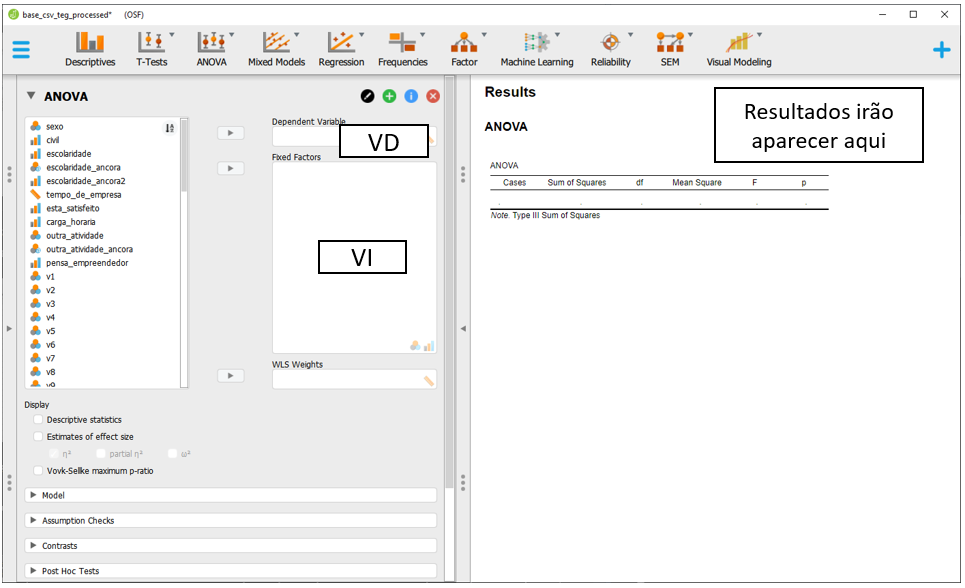
O espaço de Fixed factors é o local onde a VI deverá ser colocada, enquanto o Dependent Variable é o local onde a VD irá ser inserida. Para realizar a ANOVA de uma via, é necessário inserir a escolaridade_fct e o teg, respectivamente, em Fixed factors e Dependent Variable.
O JASP automaticamente irá realizar as contas e apresentar os resultados. Pragmaticamente, o valor de P é o indicador costumeiramente utilizado para tomar decisões inferenciais. Neste caso, como o valor de p foi menor do que o nível de significância escolhido, rejeita-se a hipótese nula. Apesar de importante, este resultado será apenas interpretado ao fim desta seção.

Atenção: A validade das inferências dos resultados depende da adequação ou não dos pressupostos dos testes estatísticos. A avaliação destas condições é parte de um procedimento diagnóstico que deve ser sempre feito.
Da mesma forma como apresentado antes, a interpretação deste achado não pode ser feita de uma forma automática. É necessário saber se os pressupostos do modelo foram ou não atendidos, bem como calcular o tamanho do efeito. Estas opções estão dispostas na parte inferior à esquerda do programa, intitulada como Assumptions checks.

A normalidade é feita por um QQ plot. Idealmente, as linhas devem estar sobrepostas no QQ plot para assumir a normalidade da distribuição dos resíduos.
A homocedasticidade é formalmente testada pelo Teste de Levene. O valor de p deve ser superior ao nível de significância eleito (quase sempre, 0.05) para considerar a homogeneidade das variâncias.
 Neste caso, há a impressão visual de que a normalidade está mantida, bem como a homocedasticidade. É importante perceber que esta versão do JASP não oferece um teste formal para testar a normalidade dos resíduos de uma ANOVA, tal como feito no R na seção anterior.
Neste caso, há a impressão visual de que a normalidade está mantida, bem como a homocedasticidade. É importante perceber que esta versão do JASP não oferece um teste formal para testar a normalidade dos resíduos de uma ANOVA, tal como feito no R na seção anterior.
Após testar estes pressupostos, é necessário verificar o quanto a interpretação originalmente deve ser mantida. Existem diferentes recomendações sobre o que fazer quando os pressupostos são violados. Entre eles, assumir essa condição e justificar a utilização da ANOVA, transformar a distribuição da variável de interesse, usar versões robustas da ANOVA, usar testes não-paramétricos com objetivos próximos à ANOVA ou eleger algum modelo estatístico mais adequado à distribuição empírica obtida pelos dados. No JASP, as técnicas Brown-Forsythe e Welch são disponíveis para corrigir a violação do pressuposto de homocedasticidade.
Como exposto previamente, o tamanho do efeito uma medida objetiva e padronizada da magnitude de um efeito observado. Assim, é sempre muito importante calculá-lo e interpretá-lo. Para inserir o tamanho do efeito na seção de resultados, é necessário clicar em Estimatives of effect size e eta quadrado (\(\eta^2\)).
Após isso feito, o valor de P irá indicar se a hipótese nula foi rejeitada ou não e o tamanho do efeito irá indicar a relevância da possível diferença.

12.6 Escrita dos resultados
O principal achado foi que os resultados médios de empreendedorismo foram significativamente influenciados pelo nível de escolaridade dos participantes. Abaixo uma sugestão de escrita baseada nas recomendações da American Psychological Association (APA).
Como escrever os resultados
Os dados foram analisados a partir de uma ANOVA de uma via que verificou o efeito da escolaridade no empreendedorismo, medido por um escala específica. Foi possível concluir que a escolaridade tem efeito significativo (F(3, 143) = 8.23, p < 0.01, ηp2 = 0.15, 90% CI [.06, .22]) nos níveis de empreendedorismo.
Repare que este resultado é bastante informativo, mas não deixa claro quais são os níveis de escolaridade que impactam significativamente o nível de empreendedorismo Para responder à esta questão mais específica, é necessário realizar uma análise chamada de Post hoc, descrita a seguir.
12.7 Post hoc
O termo post hoc é uma expressão em latim e significa “após isso,” que já sugere em qual momento ocorre a sua participação nos procedimentos analíticos. Quando uma ANOVA é significativa, quase sempre há o interesse de se investigar todas as comparações entre os níveis da VI para identificar em qual delas resultados significativos podem ocorrer. Essa série de testes pareados são chamados de testes Post hoc.
É importante alertar que os resultados significativos da ANOVA não reflete que, necessariamente, haverá diferenças significativas entre as médias dos grupos. Tecnicamente, a diferença pode ocorrer em qualquer comparação possível, como grupo 1 contra grupos 2 + grupo 3 ou grupo 2 contra grupo 1 + grupo 3. Com isso, é possível perceber que o resultado geral da ANOVA e a execução de testes post hoc respondem questões diferentes.
Na verdade, é possível inclusive realizar qualquer comparação entre os níveis da VI sem sequer realizar a ANOVA, desde que os resultados sejam devidamente corrigidos e alguns pressupostos sobre os contrastes sejam previamente assumidos. Delineamentos de comparações planejadas costumam proceder desta maneira.
Atenção: ANOVA e testes Post hoc respondem a questões diferentes. É possível ter uma ANOVA significativa e testes Post hoc não significativos. A ANOVA é um teste que verifica todos os níveis de forma simultânea, enquanto testes Post hoc fazem comparações específicas.
Tendo em vista vez que realizar uma ANOVA não é tecnicamente necessário para comparações pareadas, é possível se perguntar qual é, então, a necessidade da realização da ANOVA ou, até mesmo, por que não é possível testar as diferenças usando múltiplos Testes T ?
Historicamente, a ANOVA era um recurso muito importante em uma época em que o poder computacional era mais limitado. Seus resultados iriam indicar se comparações múltiplas deveriam ser feitas ou não. Hoje em dia, sua realização ocorre mais para que o pesquisador (i) consiga implementar computacionalmente todas as comparações pareadas entre as categorias da variável independente e, em seguida, (ii) corrija a distorção que o valor de P apresenta em cada comparação.
Quando se compara todos os níveis da variável independente, é esperado que haja uma inflação do erro do tipo 1. Isso é chamado experiment‑wise Type I error rate e ocorre pela estrutura do nível de significância, que é a seguinte: \[\alpha_{total}=1-(1-\alpha)^C\] Onde:
\(\alpha_{total}\): Indica o nível de significância total das comparações
\(\alpha\): Indica o nível de significância nominal (quase sempre, 0.05)
\(C\): Indica quantas comparações são feitas
Para encontrar \(C\) e ajustar o valor de P, é necessário calcular a quantidade de comparações. Isso pode ser feito da seguinte maneira:
\[J*(\frac{J-1}2)\] onde:
\(J\) é a quantidade de níveis da variável
No caso da pesquisa apresentada agora, como se deseja comparar todos os níveis de escolaridade, a conta seria a seguinte:
\[4*(\frac{3}{2})\\=6\]
Existem muitas técnicas disponíveis para ajustar o valor de P. Elas costumam ser agrupadas em função da sua robustez à violação da homocedasticidade e por seu perfil ser liberal ou conservador. O termo liberal significa que a correção do valor de P é pequena ou quase nula, enquanto o termo conservado significa que a correção é mais rigorosa. É importante que a técnica consiga minimizar o erro do tipo 1 (falso positivo) sem maximizar o erro do tipo 2 (falso negativo).
12.8 Execução no R
Para executar as comparações pareadas, o pacote emmeans será utilizado. A mecânica por detrás do post hoc se dá em dois passos. Primeiro, o pacote compara todos os níveis presentes na VI dois a dois. Em seguida, o valor de P obtido é ajustado por alguma técnica específica.
Para fins práticos, vamos utilizar uma técnica considerada bastante conservadora, chamada de Bonferroni. Nesta correção, o valor de p encontrado em cada uma das comparações é multiplicado pela quantidade de comparações feitas. Este procedimento faz com que o Valor de P encontrado em cada comparação seja igual ao que seria obtido pelo nível de significância nominal.
A história desta técnica tem aspectos curiosos A correção de Bonferroni não foi desenvolvida pelo matemático italiano Carlo Emilio Bonferroni. Na verdade, ela foi inicialmente implementada por uma estaticista americana, chamada Olive Jean Dunn, que utilizou conceitos da desigualdade de Bonferroni para isso.
O resultado das comparações dois a dois será armazenado em um objeto específico, nomeado como post_hoc_escolaridade. Isso será útil para apresentar sumários e gráficos.
post_hoc_escolaridade <- emmeans(mod_escolaridade,
"escolaridade_fct") %>%
pairs(., reverse = TRUE, adjust = "bonferroni")A apresentação tabular é fundamental e traz as estatísticas inferenciais de interesse. Nesta tabela, o valor de P apresentado na coluna p.value é o corrigido pelas comparações feitas.
post_hoc_escolaridade %>%
data.frame() %>%
pander()| contrast | estimate | SE | df | t.ratio | p.value |
|---|---|---|---|---|---|
| ginasio - primario | 2.091 | 1.893 | 143 | 1.104 | 1 |
| Colegial - primario | 4.204 | 1.802 | 143 | 2.333 | 0.1263 |
| Colegial - ginasio | 2.113 | 0.8749 | 143 | 2.415 | 0.102 |
| superior - primario | 7.159 | 1.956 | 143 | 3.661 | 0.002116 |
| superior - ginasio | 5.069 | 1.159 | 143 | 4.374 | 0.00014 |
| superior - Colegial | 2.955 | 1.003 | 143 | 2.948 | 0.02244 |
O gráfico das comparações com barras de erro proporciona uma conclusão mais rápida e simples para todas as comparações. Para interpretar o gráfico, é necessário ter como referência o valor 0 no eixo horizontal e, em seguida, verificar todas as comparações no eixo vertical. Quando alguma comparação toca o valor 0, isso indica que os grupos não são significativamente diferentes. Quando isso não ocorre, é possível sugerir que há diferença nos grupos.
CI <- confint(post_hoc_escolaridade)
ggplot(mapping = aes(contrast, estimate)) +
geom_errorbar(aes(ymin = lower.CL, ymax = upper.CL), data = CI) +
geom_point(data = summary(post_hoc_escolaridade)) +
geom_hline(yintercept = 0, linetype = "dashed") +
scale_size(trans = "reverse") +
coord_flip()
De forma geral, as comparações Superior - Primário, Superior - Ginásio e Superior - Colegial são significativas. Em todas elas, os resultados da TEG foram mais elevados nos participantes com ensino superior.
No início desta seção, foi comentando que o controle do erro do tipo 1 era uma vantagem da realização deste procedimento, que inclui não apenas fazer uma ANOVA, mas calcular quantas comparações existem entre os níveis da VI e corrigir os resultados dos valores de P.
Um exemplo pode ser útil a este momento. A correção implementada no teste post hoc concluiu que a comparação entre colegial - primário não é significativa. Nesta comparação, o valor de p foi de 0.102. No entanto, caso um Teste T tivesse sido realizado selecionando apenas esta comparação, os resultados seriam significativos (0.01), tal como demonstrado a seguir:
dados_teg %>%
filter(escolaridade_fct == "Colegial" |
escolaridade_fct == "ginasio") %>%
{t.test(teg ~ escolaridade_fct, var.equal = T, data = .)$p.value} %>%
pander()0.01208
Atenção: Não se deve fazer múltiplos Testes T para comparar três ou mais grupos. O valor de P obtido pelo Teste T aumentará o erro do tipo 1.
A interpretação dos resultados agora pode ser feita considerando o valor de P, o tamanho do efeito e as comparações pareadas.
12.9 Execução no JASP
Assumindo que a ANOVA já foi realizada e interpretada, o Post hoc poderá ser feito. Para executá-lo no JASP, é necessário clicar em Post Hoc tests, na parte esquerda inferior do programa. Ao fazer isso, um conjunto de novas opções ficará disponível logo abaixo da opção.

Em seguida, basta colocar ao lado direito a variável de interesse (escolaridade_fct). O JASP automaticamente irá realizar todas as comparações principais e corrigir o valor de P. O padrão do JASP é a correção de Tukey, que pode ser alterada clicando em Correction.

Mesmo sem implementar a correção de Bonferroni, os achados são virtualmente idênticos aos obtidos anteriormente pelo R. Possíveis diferenças de sinal (+ ou -) ocorrem pela codificação das variáveis e não impactam em nada a interpretação dos achados.
A interpretação dos resultados agora pode ser feita considerando o valor de P, o tamanho do efeito e as comparações pareadas.

Eventualmente, a apresentação de um gráfico de diferenças oferece um recurso visual adicional e importante para auxiliar no entendimento dos achados. Além do gráfico feito inicialmente na seção Descriptives, esta seção do JASP também permite que um gráfico seja construído. Para fazer isso, é necessário clicar em Descriptive plots.

Em seguida, é necessário levar a variável escolaridade_fct para o Horizontal axis, marcar a opção Display Error bars e Standard error. O resultado será como abaixo.
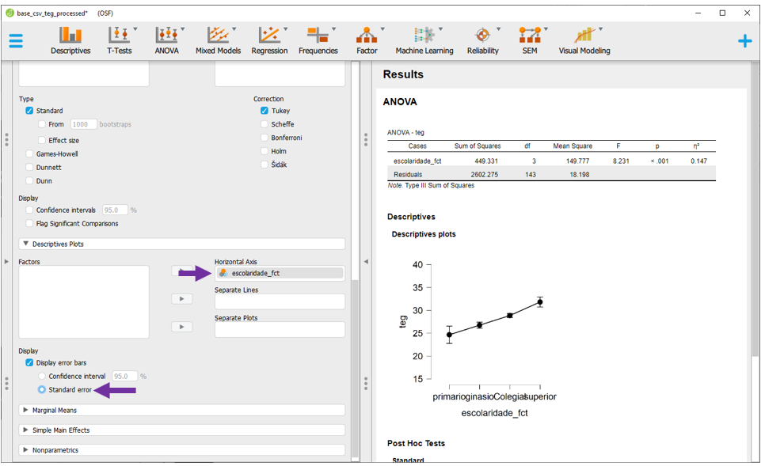
12.10 Escrita dos resultados
A escrita dos resultados deve informar os resultados da ANOVA e das comparações pareadas. É importante apresentar os valores de P corrigidos e, sempre que possível, as interpretações teóricas. Abaixo há uma sugestão com estilo baseado nas recomendações da American Psychological Association (APA).
Como escrever os resultados
Os dados foram analisados a partir de uma ANOVA de uma via que verificou o efeito da escolaridade no empreendedorismo, medido por um escala específica. Foi possível concluir que a escolaridade é um fator significativo nos resultados (F(3, 143) = 8.23, p < 0.01, ηp2 = 0.15, 90% CI [.06, .22]). As comparações pareadas foram ajustadas pela técnica de Bonferroni e mostraram que os participantes com ensino superior apresentam pontuação significativamente mais alta do que àqueles com o primário (Δ = 7.16, p < 0.001), ginásio (Δ = 5.07, p < 0.001) e colegial (Δ = 2.96, p < 0.05).
12.11 Resumo
- A ANOVA de uma via pode tanto ser entendida como um super Teste T, como um caso particular de um modelo de regressão
- Testes post hoc e resultados globais da ANOVA não respondem às mesmas perguntas
- As comparações pareadas devem proteger a inflação do erro do tipo 1, sem gerar o erro do tipo 2
12.12 Pesquisas adicionais
- Cognitive Processes and Memory Differences in Recall and Recognition in Adults
Nesta pesquisa, cerca de 150 estudantes foram apresentados a um filme e depois tiveram que lembrar algumas cenas. Três grupos distintos foram formados. Em um grupo, uma recordação com pistas foi implementada, em outro, técnicas de reconhecimento foram utilizadas e o terceiro grupo teve de fazer uma recordação livre, sem nenhum suporte adicional.
12.13 Pesquisa
A base desta pesquisa está disponível em formato R (Rdata) e em CSV, que é lido pelo JASP. Clique na opção desejada.
Base R: Base - MEMORE 2020 Automated model selection
Base JASP: Base CSV - CSV file - MEMORE Cognitive measurement (1)
Nas próximas seções, a pesquisa intitulada Psychometric properties of a short-term visual memory test (MEMORE)" será parcialmente utilizada. Esse artigo foi publicado em 2020 e eu sou o primeiro autor. Nesta pesquisa, apresentamos algumas propriedades psicométricas de um teste psicológico desenvolvido para avaliar aspectos da memória de curto prazo (MEMORE), bem como análises estatísticas que visaram investigar o efeito de características psicológicas nos resultados obtidos pelos participantes neste teste específico.
12.14 ANOVA de 2 vias
Em grande parte das vezes, o interesse do pesquisador é o de investigar como múltiplos fatores impactam a variável de desfecho. Quando se aumenta o número de variáveis independentes no modelo, consequentemente se aumenta a quantidade de vias ou fatores que a ANOVA possui. Na pesquisa de agora, como o interesse foi investigar o efeito da escolaridade e da faixa etária, trata-se de uma ANOVA de 2 vias.
Na ANOVA de 2 vias, dois modelos principais podem ser calculados. O primeiro é chamado de “modelo aditivo,” em que não se estipulam interações entre os fatores. O segundo modelo é denominado como “não aditivo” ou “saturado” e ocorre quando uma interação entre os fatores é definida. O termo “saturado” tende a gerar confusão e deve ser evitado, uma vez sua definição varia de área para área. Nesta seção, será apresentado o modelo aditivo, enquanto na seção ANOVA fatorial, o modelo não aditivo será descrito.
Atenção: Uma ANOVA de duas vias é chamada de aditiva quando tem apenas efeitos principais. Quando há interação, ela é chamada de não aditiva ou saturada. O termo saturada pode gerar confusão com outras definições.
Conceitualmente, na ANOVA de duas vias sem interação, temos:
\[y_i = b_0 + b_1X{_1}_i + b_2X{_2}_i + ei\]
\(y_i\) representa a variável dependente
\(b_0\) é o intercepto (coeficiente linear)
\(b_1\) é a inclinação da primeira VI
\(X_1\) é a primeira variável independente
\(b_2\) é a inclinação da segunda VI
\(X_2\) é a segunda variável independente
\(e_i\) é o erro/resíduo
12.15 Execução no R
A modelagem no R segue o mesmo padrão da feita anteriormente, iniciando pela codificação dos dados. É importante frisar que erros nesta etapa podem distorcer totalmente os resultados. Na variável faixa etária há rótulos para cada intervalo, tornando a interpretação bastante fácil e intuitiva. Na variável escolaridade, se utilizou valores de 1 a 3 para identificar o ensino fundamental, médio e superior.
ds <- ds %>%
mutate(escolaridade_grupo = factor(escolaridade_grupo),
faixa_etaria = factor(faixa_etaria))Os dados apresentam casos ausentes na variável faxa etária e escolaridade. Muitas ações podem ser feitas para lidar com esta condição. No entanto, apenas para finalidade pedagógica, esses valores não serão utilizados nestas análises de agora.
ds <- ds %>%
filter(!is.na(faixa_etaria) & !is.na(escolaridade_grupo))A apresentação de tabelas e gráficos que possibilitem uma primeira descrição dos dados é importante e deve ser realizado. A tabela a seguir tem um formato 5x3. Nela, as linhas apresentam os níveis da faixa etária e as colunas apresentam os níveis da escolaridade, com seus respectivos resultados.
ds %>%
group_by(escolaridade_grupo, faixa_etaria) %>%
summarise_at(vars(memore_total), lst(n=~n(), mean, sd)) %>%
pivot_wider(names_from = escolaridade_grupo, #indexador unico
names_sep = "_", #pode ser removido
values_from = c(n:sd)) %>% #organizar valores
pander(., split.table = Inf)| faixa_etaria | n_1 | n_2 | n_3 | mean_1 | mean_2 | mean_3 | sd_1 | sd_2 | sd_3 |
|---|---|---|---|---|---|---|---|---|---|
| Entre 14 e 24 | 2 | 240 | 580 | 5 | 12.94 | 11.8 | 1.414 | 5.377 | 5.81 |
| Entre 25 e 34 | 13 | 112 | 189 | 6.308 | 12.62 | 11.77 | 7.25 | 7.088 | 6.066 |
| Entre 35 e 44 | 26 | 93 | 69 | 5.769 | 6.882 | 9.246 | 6.308 | 5.128 | 6.251 |
| Entre 45 e 54 | 15 | 50 | 28 | 4.8 | 5.92 | 7.643 | 4.057 | 4.517 | 6.843 |
| Entre 55 e 64 | 3 | 5 | 9 | 5.333 | 5.6 | 6.667 | 6.11 | 3.847 | 8.544 |
Gráficos específicos com relações bivariadas ajudam em uma primeira sondagem dos padrões. Na imagem a seguir, o primeiro gráfico apresenta a relação entre os resultados e os níveis de escolaridade, enquanto o segundo gráfico apresenta a relação que os resultados possuem com a faixa etária dos participantes.
gridExtra::grid.arrange(
ggplot(ds, aes(x=escolaridade_grupo, y = memore_total,
fill = escolaridade_grupo)) +
geom_bar(stat = "summary") +
stat_summary(fun.data = mean_se, geom = "errorbar") +
theme(legend.position = "none"),
ggplot(ds, aes(x = faixa_etaria, y = memore_total, group = 1)) +
stat_summary(geom = "line", fun = mean, size=1.0) +
stat_summary(fun.data = mean_se, geom = "errorbar", width = .2))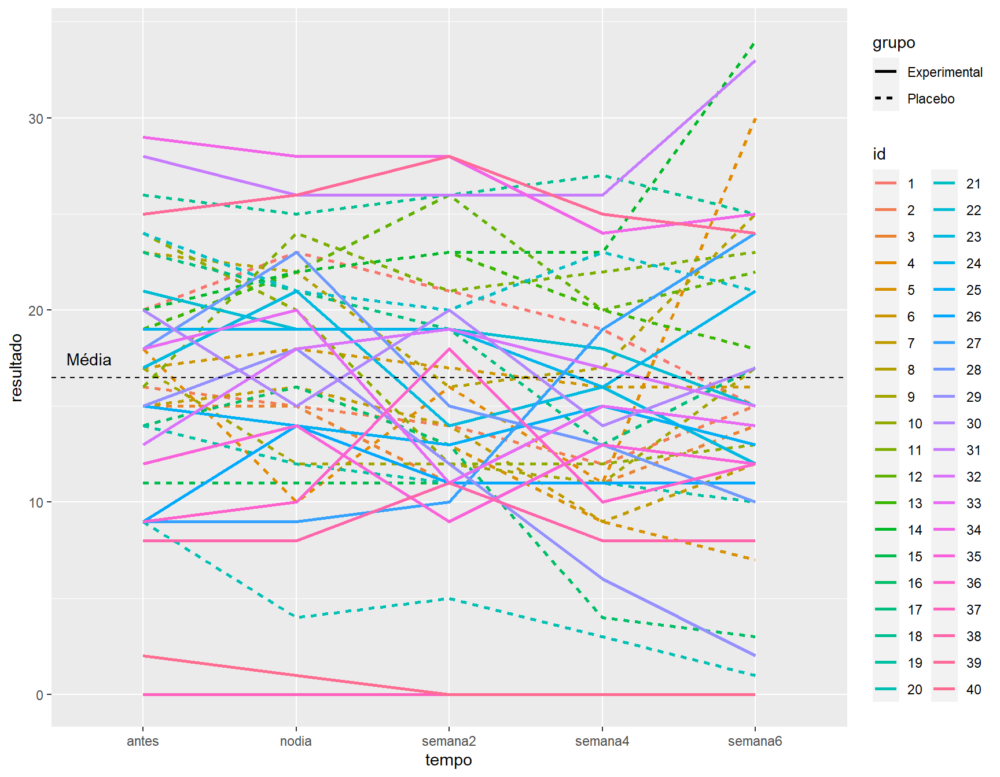
Por sua vez, gráficos mais complexos, que reúnem mais informações, também são úteis. Repare que a ideia principal da apresentação a seguir é descrever a influência da faixa etária e o nível de escolaridade nos resultados em um único gráfico. Conforme explicitado no capítulo sobre estatística descritiva, o eixo X é utilizado pela variável com mais níveis (faixa etária), enquanto o agrupador reúne a variável com menos níveis (escolaridade).
ggplot(ds, aes(x = faixa_etaria, y = memore_total,
color = escolaridade_grupo,
group = escolaridade_grupo)) +
stat_summary(geom = "line", fun = mean, size = 1) +
stat_summary(fun.data = mean_se,
geom = "errorbar", width = .2) +
theme(legend.position = "bottom")É importante ter atenção que este gráfico não é necessariamente o melhor para uma ANOVA de 2 vias (aditiva), uma vez que pode sugerir algum relacionamento entre as variáveis independentes. Esse aspecto será melhor debatido na seção de ANOVA Fatorial.
É possível analisar descritivamente cada um dos resultados. Entretanto, para tomar decisões inferenciais, é necessário a realização da modelagem formal. Os passos devem ser exatamente os mesmos aos performados anteriormente, incluindo a verificação de pressupostos e interpretação dos resultados. Para realizar a ANOVA de duas vias, é possível contar com a função lm ou aov. Aqui, a escolha da lm foi apenas por conveniência. O vetor mod_escolaridade_faixa_etaria irá armazenar os resultados.
mod_escolaridade_faixa_etaria <- lm(memore_total ~ escolaridade_grupo + faixa_etaria, ds)A tabela padronizada da ANOVA de duas vias, disponível na maioria dos programas comerciais, é a seguinte:
| Preditor | Soma dos Quadrados | Graus de liberdade | Quadrado médio | Estat. F |
|---|---|---|---|---|
| Fator (A) | Entre (SS(A)) | K(A)-1 | MS(A) = SS(A)/ (K-1) |
F = MS(A)/ MSW |
| Fator (B) | Entre (SS(B)) | K(B)-1 | MS(B) = SS(B)/ (K-1) |
F = MS(B)/ MSW |
| Resíduo | Dentro (SSW) | N-1-(df(A)+df(B)) | MSW = SSW/ (N-1-(df(A)+df(B))) |
Posto isso, os resultados obtidos são:
apaTables::apa.aov.table(mod_escolaridade_faixa_etaria)$table_body %>% pander(.)| Predictor | SS | df | MS | F | p | partial_eta2 |
|---|---|---|---|---|---|---|
| (Intercept) | 4088.33 | 1 | 4088.33 | 117.73 | .000 | |
| escolaridade_grupo | 526.43 | 2 | 263.21 | 7.58 | .001 | .01 |
| faixa_etaria | 4579.98 | 4 | 1144.99 | 32.97 | .000 | .08 |
| Error | 49554.34 | 1427 | 34.73 |
| CI_90_partial_eta2 |
[.00, .02]
[.06, .11] Os achados concluem que o efeito da escolaridade (F(2,1427) = 7.58, p = 0.001, ηp2 = 0.01, 90% CI [.00 .02]) e o efeito da faixa etária são significativos (F(4,1427) = 32.97, p < 0.001, ηp2 = 0.08, 90% CI [.06 .11]). Isso indica que ambas as variáveis tem efeito nos resultados obtidos na avaliação psicológica.
Atenção: Jamais apresente p = 0.00. Apresente até 3 casas decimais no valor de P ou, quando necessário, apresente p < 0.001.
Note que a tabela já reúne a métrica do tamanho do efeito, que é dada pelo eta quadrado parcial. Uma vez que agora a ANOVA apresenta dois fatores, o valor do \(\eta_p^2\) é diferente do \(\eta^2\), mas a interpretação é a mesma da apresentada na ANOVA de 1 via.
Atenção: A validade das inferências dos resultados depende da adequação ou não dos pressupostos dos testes estatísticos. A avaliação destas condições é parte de um procedimento diagnóstico que deve ser sempre feito.
Da mesma forma que apresentado na ANOVA de 1 via, a validade da interpretação dos resultados depende dos pressupostos do modelo estatístico. A violação destes pressupostos distorce, limita ou invalida as interpretações teóricas propostas, uma vez que tanto o aumento do erro do tipo 1 (falso positivo), como do tipo 2 (falso negativo) podem ocorrer (Barker & Shaw, 2015; Ernst & Albers, 2017; Lix et al., 1996).
Normalidade: O QQ plot abaixo apresenta os valores teóricos e empíricos. Caso ambas as linhas estejam sobrepostas, isso apoia que o pressuposto da normalidade foi atendido. Neste caso, isso não parece ocorrer.
olsrr::ols_plot_resid_qq(mod_escolaridade_faixa_etaria)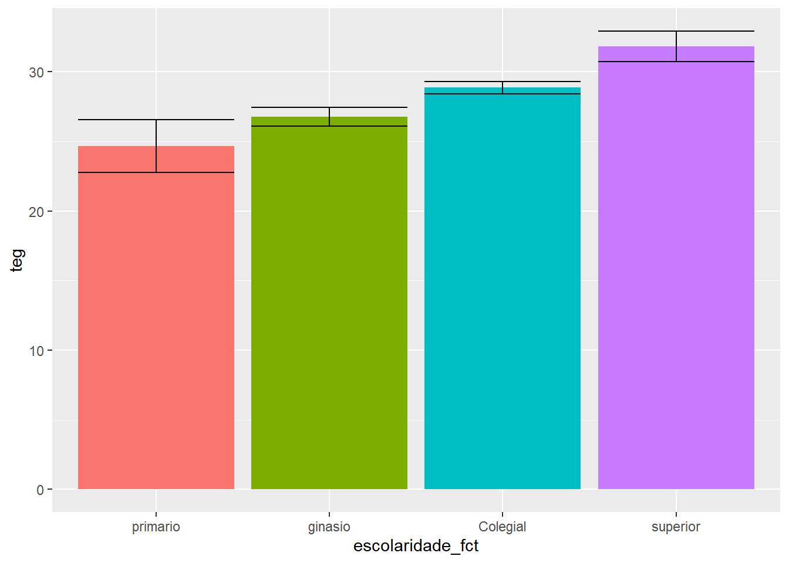
O Shapiro-wilk, Anderson-Darling e Jarque Bera também podem ser utilizado neste caso. A hipótese nula desses testes assume que os resíduos são normalmente distribuídos.
shapiro.test(residuals(mod_escolaridade_faixa_etaria))##
## Shapiro-Wilk normality test
##
## data: residuals(mod_escolaridade_faixa_etaria)
## W = 0.99336, p-value = 4.896e-06Os resultados de ambas as técnicas foram similares, indicando a violação da normalidade dos resíduos.
Homocedasticidade: Este pressuposto pode ser testado por um gráfico dos resíduos contra os valores previstos. O ideal é não encontrar padrões no gráfico.
olsrr::ols_plot_resid_fit(mod_escolaridade_faixa_etaria)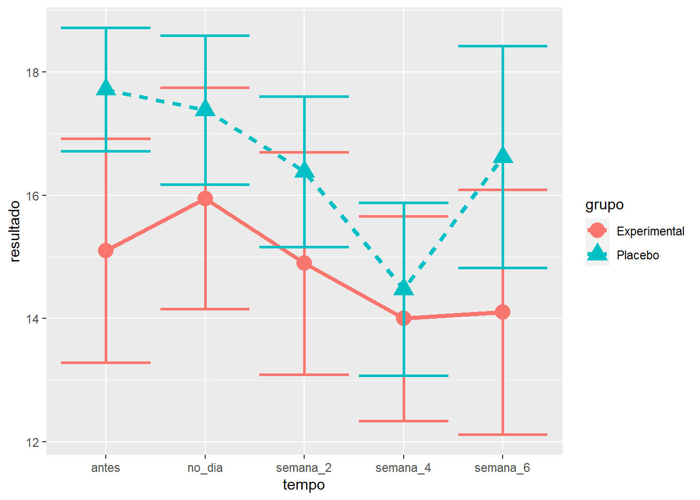
O teste de Levene, de Bartlett ou de Breusch-Pagan podem também serem utilzados de maneira formal. Eles estipulam \(H_0\) como homocedasticidade e, idealmente, não deve ser rejeitada.
olsrr::ols_test_breusch_pagan(mod_escolaridade_faixa_etaria)##
## Breusch Pagan Test for Heteroskedasticity
## -----------------------------------------
## Ho: the variance is constant
## Ha: the variance is not constant
##
## Data
## ----------------------------------------
## Response : memore_total
## Variables: fitted values of memore_total
##
## Test Summary
## ----------------------------
## DF = 1
## Chi2 = 0.2612151
## Prob > Chi2 = 0.6092866Os resultados indicaram que a homocedasticidade foi preservada.
Independência: Esse pressuposto frequentemente não é testado na ANOVA, apesar de ser uma exigência dos modelos lineares. De fato, uma vez que se espera que os grupos sejam mutuamente excludentes, teria pouco sentido acreditar que os resíduos não fossem independentes.
12.16 Execução no JASP
Para executar a ANOVA de 2 vias no JASP, será necessário baixar a base CSV file - MEMORE Cognitive measurement.csv. Após carregar os dados no programa, a seção Descriptives apresentará o gráfico inicial dos resultados.

Ao clicar nesta opção, será possível eleger as variáveis que irão ser analisadas e as variáveis que irão funcionar como agrupadores. Na prática, a lista Variables irá reunir as variáveis dependentes, enquanto a variável independente será colocada na seção Split. É importante atentar à opção Frequency tables (nominal and ordinal), que deve ser marcada quando o nível de medida da variável de interesse for nominal ou ordinal.
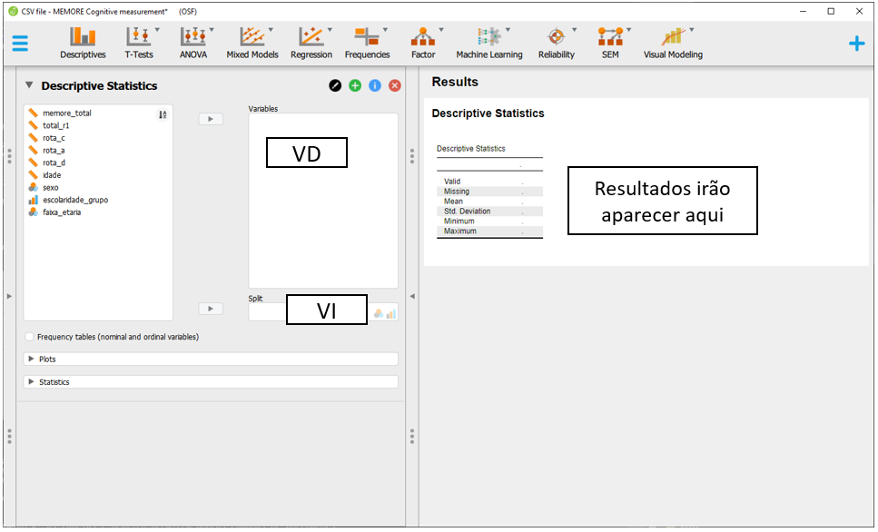
Em seguida, ao clicar na opção Plots, será possível selecionar o Boxplot e Boxplot element. O gráfico aparecerá abaixo da tabela e irá apresentar diferentes informações estatísticas da distribuição dos resultados da avaliação psicológica em função dos níveis de escolaridade. Uma visualização preliminar indica que pessoas com escolaridade mais elevada (níveis 2 e 3) apresentam resultados maiores do que pessoas com o primeiro nível de escolaridade.
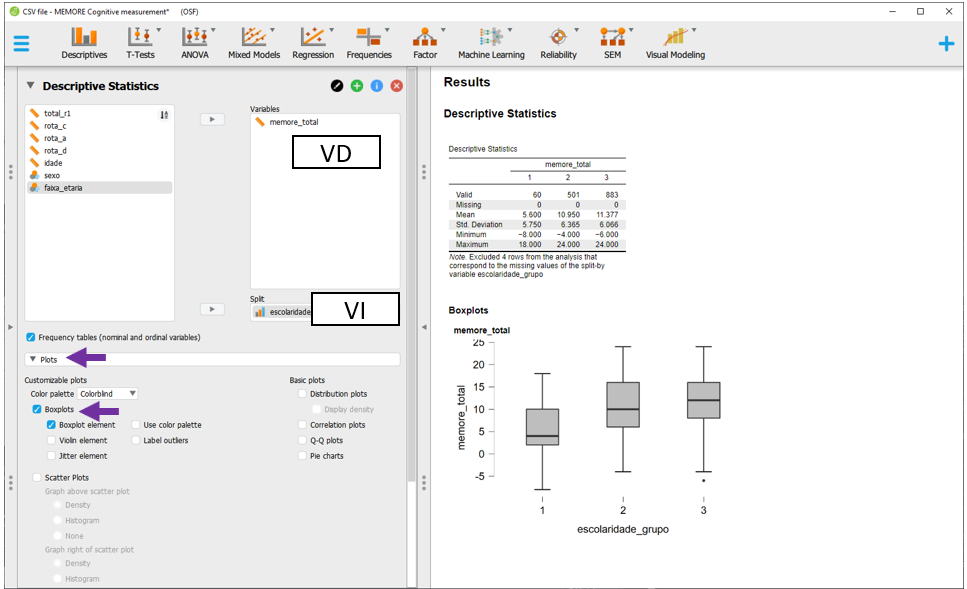
Para modificar as variáveis de interesse, será necessário substituir escolaridade por faixa_etária na seção Split. Os resultados serão novamente calculados. A visualização sugere que pessoas mais velhas apresentam menor desempenho.
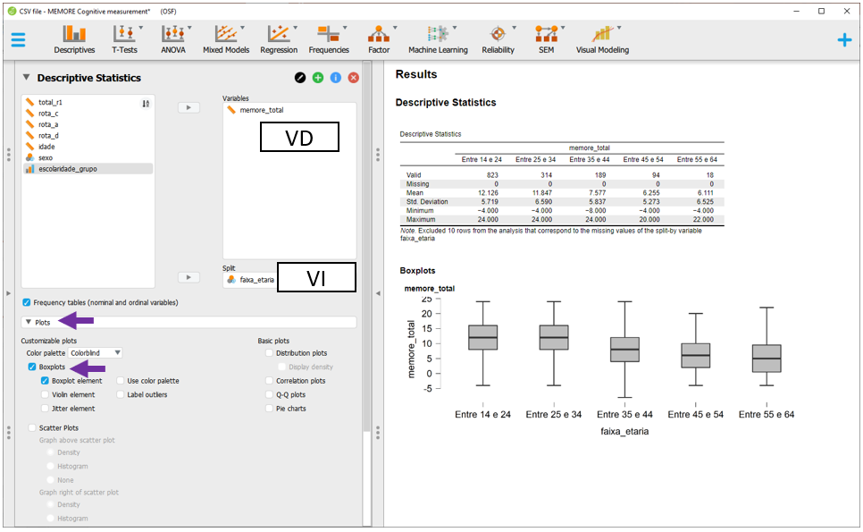
Por padrão, o JASP não permite integrar os gráficos nesta seção. Isso será realizado posteriormente. Para executar a ANOVA, será necessário clicar na opção ANOVA, Classical e ANOVA. Essa etapa é similar a que foi feita na ANOVA de 1 via. Ao realizar isso, a tela a ser exibida será próxima à imagem a seguir.
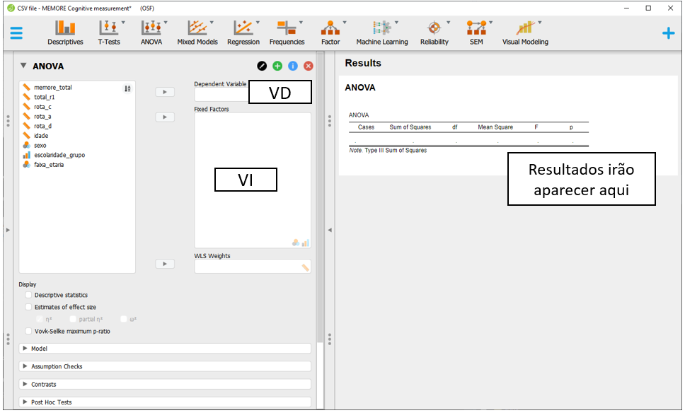
O espaço de Fixed factors é o local onde as duas VIs deverão ser inseridas. O espaço Dependent Variable é o local onde a VD contínua irá ser inserida. Para realizar a ANOVA de duas vias, as variáveis escolaridade e faixa_etaria deverão ser arrastadas para Fixed factors. A variável memore_total deverá ser colocada em Dependent Variable.
O JASP automaticamente irá realizar as contas e apresentar os resultados. No entanto, estes resultados não são estritamente de uma ANOVA de 2 vias aditiva. Repare que, diferente do modelo que planejamos, existe um outro preditor escolaridade x faixa_etaria. Isso ocorre pois, por padrão, o JASP realiza uma ANOVA fatorial, que será discutida a seguir.
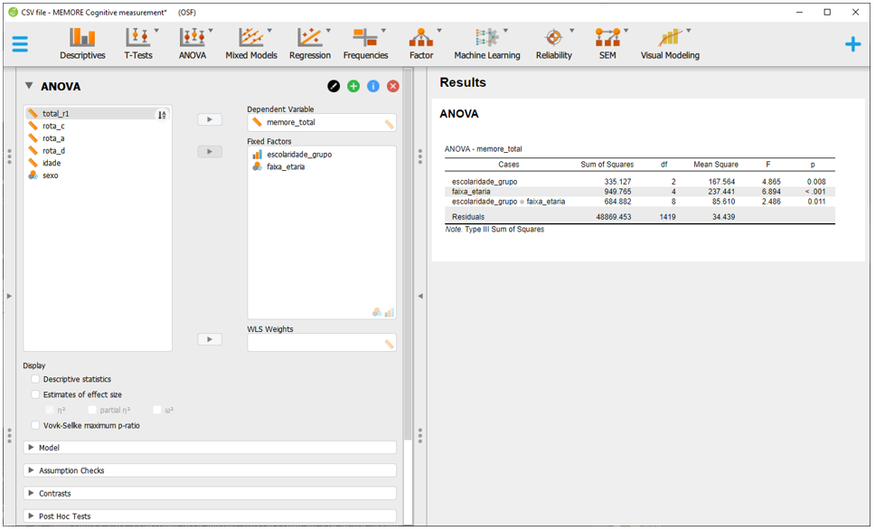
Para ajustar a modelagem, será necessário clicar em Model, na parte inferior esquerda do programa.
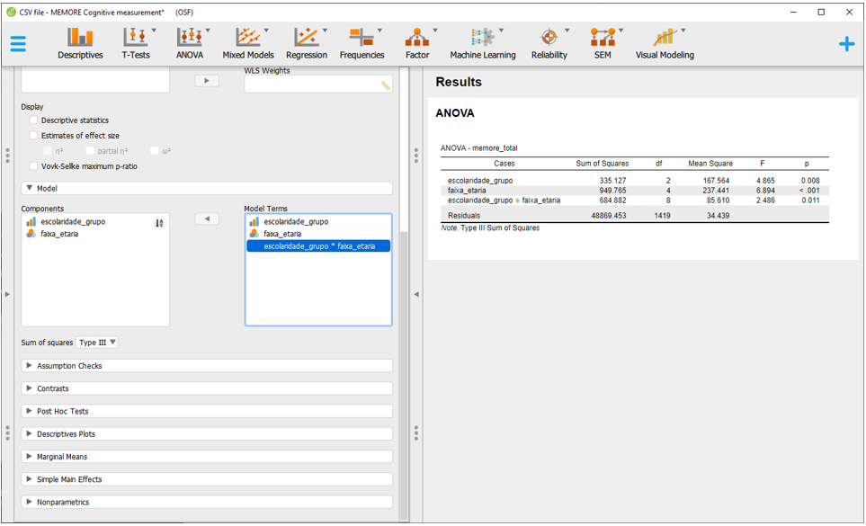
Nesta tela, basta clicar em escolaridade x faixa_etaria e transferir do lado direito para o lado esquerdo clicando na seta destacada na imagem.
 Ao fazer isso, o JASP automaticamente irá refazer as contas e apresentar os resultados.
Ao fazer isso, o JASP automaticamente irá refazer as contas e apresentar os resultados.
Pragmaticamente, o valor de P é o indicador costumeiramente utilizado para tomar decisões inferenciais. Os valores são exatamente os mesmos obtidos anteriormente na modelagem pelo R, indicando que ambas as variáveis são significativas. Repare que esta tabela inicial não apresenta o tamanho do efeito que deverá ser calculado em seguida. Além disso, estes resultados ainda não indicam se os pressupostos do modelo foram respeitados ou violados, o que também deverá ser testado.

Atenção: A validade das inferências dos resultados depende da adequação ou não dos pressupostos dos testes estatísticos. A avaliação destas condições é parte de um procedimento diagnóstico que deve ser sempre feito.
Para verificar se os pressupostos de normalidade e homocedasticidade foram respeitados, é necessário clicar em Assumption checks.
 As opções
As opções Homogeneity tests e Q-Q plot of residuals deverão ser marcadas. Pela impressão visual, a normalidade dos resíduos foi violada. Isso é mais fácil de perceber nos resultados extremos. Além disso, a homocedasticidade foi também violada. É importante notar que os resultados do JASP foram divergentes dos resultados do R. Isso se dá pelo teste de homocedasticidade utilizado. No R, o teste foi o breusch Pagan, enquanto no JASP foi o de Levene.
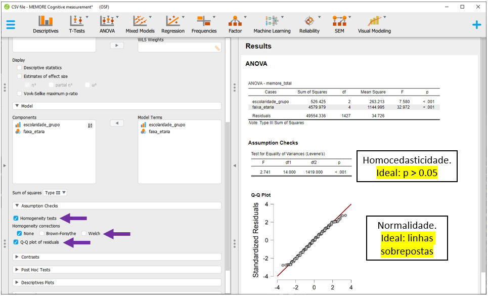
Existem algumas saídas que podem ser implementadas quando os pressupostos são violados. Muitas opções são possíveis e elas vão desde modificar a modelagem até não corrigir explicitamente tais condições desde que se justifique metodologicamente esta escolha. No ambiente JASP, ambas as correções propostas para violação da homocedasticidade não são possíveis para uma ANOVA de 2 vias. Assim, mesmo com os pressupostos não alcançados, o modelo utilizado não será corrigido.
Antes de voltar à interpretação da ANOVA, é necessário inserir o tamanho do efeito. Para isso, basta clicar em Estimatives of effect size e, em seguida, no eta quadrado parcial (\(η_p^2\)). Diferente de uma ANOVA de 1 via, os resultados do \(η_p^2\) serão diferentes do \(η^2\). Uma vez que a ANOVA de 2 vias apresenta dois preditores, o \(η_p^2\) informa a variância explicada por cada uma das variáveis após excluir a variância explicada pelas outras.
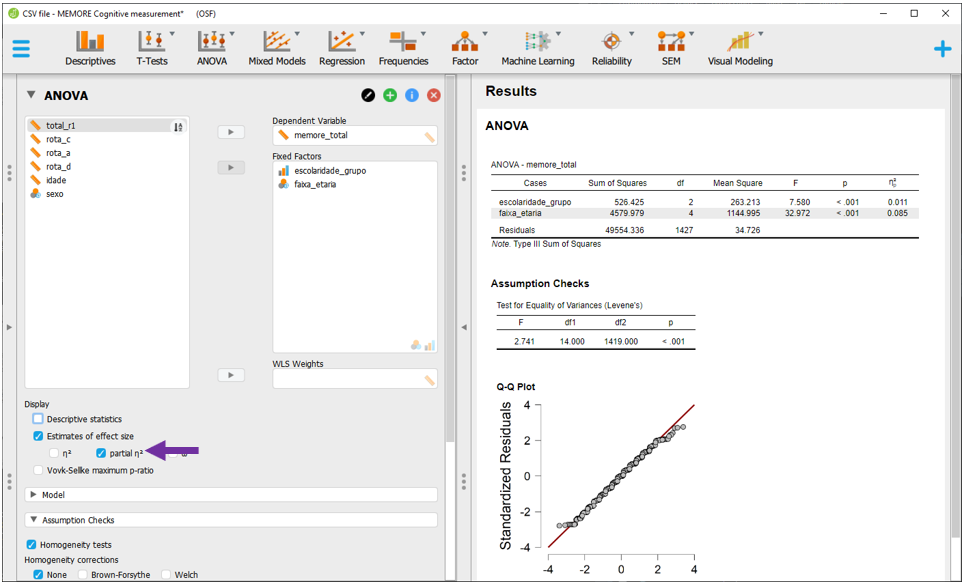
A este momento, a interpretação pode ser feita integralmente. O valor de P irá indicar se a hipótese nula foi rejeitada ou não e o tamanho do efeito irá indicar a relevância da possível diferença, com interpretação disposta na tabela previamente exposta neste capítulo.
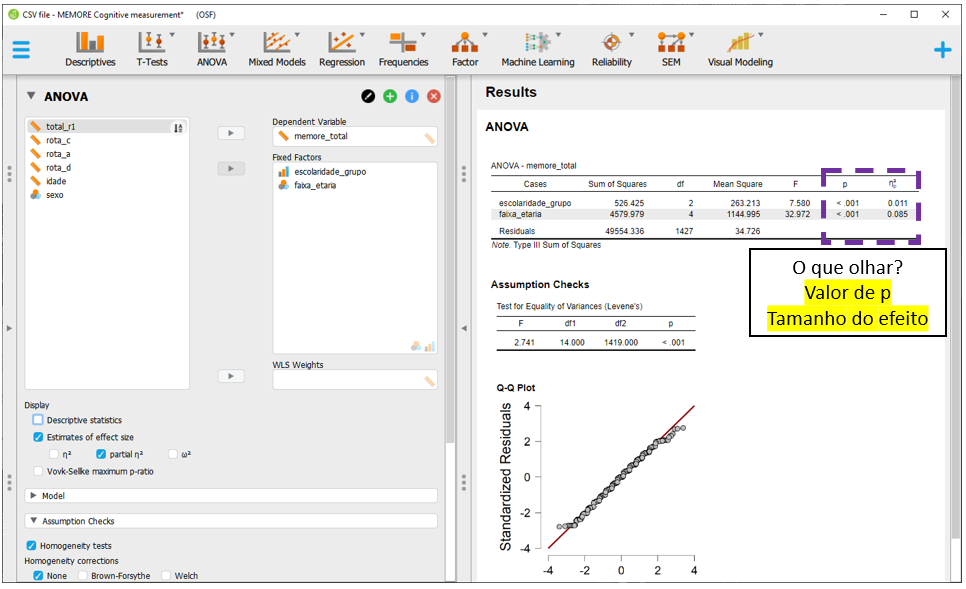
12.17 Escrita dos resultados
Após a execução de uma ANOVA de duas vias, foi possível concluir que ambas as variáveis foram significativas aos resultados da avaliação psicológica. Abaixo uma sugestão de escrita baseado nas recomendações da American Psychological Association (APA).
Como escrever os resultados
Os dados obtidos na avaliação psicológica foram analisados por uma ANOVA de duas vias para investigar o efeito da escolaridade e faixa etária nos resultados. Os achados permitiram concluir que tanto a escolaridade (F(2, 1427) = 7.58, p = 0.001, n2p = 0.01), como a faixa etária (F(4, 1427) = 32.972, p < 0.001, n2p = 0.08) tiveram efeito significativo nos resultados.
De forma análoga ao que aconteceu na ANOVA de 1 via, os resultados não indicam os níveis em que as diferenças podem existir. Testes post hoc são, novamente, necessários para responder à esta pergunta.
12.18 Post hoc
Na ANOVA de duas vias, o post hoc será realizado para cada um dos níveis ou fatores do modelo. Neste caso, escolaridade e faixa_etaria.
12.19 Execução no R
O pacote emmeans será utilizado para, inicialmente, verificar cada uma das comparações entre os níveis de escolaridade. É bom notar que os resultados são ajustados pelas outras variáveis que integram o modelo. O vetor post_hoc_twoway_escolaridade reunirá os resultados.
post_hoc_twoway_escolaridade <- emmeans(mod_escolaridade_faixa_etaria,
"escolaridade_grupo") %>%
pairs(.,adj = "bonferroni")A apresentação formal ocorre por tabelas, tal como a exposta a seguir. A última coluna p.value apresenta o valor de P corrigido pela técnica de Bonferroni.
post_hoc_twoway_escolaridade %>%
data.frame() %>%
pander()| contrast | estimate | SE | df | t.ratio | p.value |
|---|---|---|---|---|---|
| 1 - 2 | -3.23 | 0.8339 | 1427 | -3.873 | 0.0003374 |
| 1 - 3 | -2.84 | 0.8368 | 1427 | -3.394 | 0.002125 |
| 2 - 3 | 0.3898 | 0.3394 | 1427 | 1.149 | 0.7527 |
O gráfico a seguir apresenta um resultado mais fácil de interpretar em relação às comparações e também foi realizado também na ANOVA de 1 via. O eixo horizontal tem destaque ao valor 0 e o eixo vertical apresenta todas as comparações. Caso alguma das comparações passe pelo valor 0, isso indica que ela não é significativa.
CI <- confint(post_hoc_twoway_escolaridade)
ggplot(mapping = aes(contrast, estimate)) +
geom_errorbar(aes(ymin = lower.CL, ymax = upper.CL), data = CI) +
geom_point(data = summary(post_hoc_twoway_escolaridade)) +
geom_hline(yintercept = 0, linetype = "dashed") +
scale_size(trans = "reverse") +
coord_flip()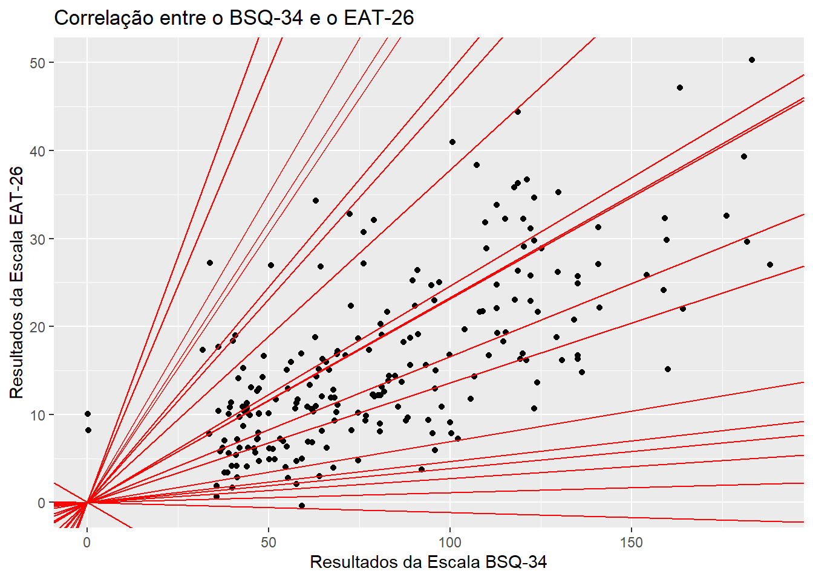
É possível concluir que pessoas com nível fundamental, quando comparadas às pessoas de nível médio (Δ = 3.23) e superior (Δ = 2.84), apresentam performance significativamente menor. Pessoas com ensino médio e ensino superior não tem resultados significativamente diferentes.
Para comparar os resultados em função de todos os níveis de faixa_etaria, basta customizar um pouco a função.
post_hoc_twoway_faixaetaria <- emmeans(mod_escolaridade_faixa_etaria,
"faixa_etaria") %>%
pairs(.,adj = "bonferroni")Agora, a tabela apresenta os resultados das comparações etárias de maneira detalhada.
post_hoc_twoway_faixaetaria %>%
data.frame() %>%
pander()| contrast | estimate | SE | df | t.ratio | p.value |
|---|---|---|---|---|---|
| Entre 14 e 24 - Entre 25 e 34 | 0.1818 | 0.3933 | 1427 | 0.4622 | 1 |
| Entre 14 e 24 - Entre 35 e 44 | 4.212 | 0.4979 | 1427 | 8.459 | 6.59e-16 |
| Entre 14 e 24 - Entre 45 e 54 | 5.501 | 0.667 | 1427 | 8.247 | 3.654e-15 |
| Entre 14 e 24 - Entre 55 e 64 | 5.503 | 1.451 | 1427 | 3.792 | 0.001556 |
| Entre 25 e 34 - Entre 35 e 44 | 4.03 | 0.5529 | 1427 | 7.289 | 5.148e-12 |
| Entre 25 e 34 - Entre 45 e 54 | 5.319 | 0.7074 | 1427 | 7.519 | 9.698e-13 |
| Entre 25 e 34 - Entre 55 e 64 | 5.322 | 1.472 | 1427 | 3.616 | 0.003093 |
| Entre 35 e 44 - Entre 45 e 54 | 1.289 | 0.7475 | 1427 | 1.724 | 0.8483 |
| Entre 35 e 44 - Entre 55 e 64 | 1.292 | 1.494 | 1427 | 0.8644 | 1 |
| Entre 45 e 54 - Entre 55 e 64 | 0.002391 | 1.556 | 1427 | 0.001536 | 1 |
Conforme previamente descrito, O gráfico é um recurso útil à visualização dos resultados, permitindo que as conclusões se tornem mais fáceis de serem obtidas.
CI <- confint(post_hoc_twoway_faixaetaria)
ggplot(mapping = aes(contrast, estimate)) +
geom_errorbar(aes(ymin = lower.CL, ymax = upper.CL), data = CI) +
geom_point(data = summary(post_hoc_twoway_faixaetaria)) +
geom_hline(yintercept = 0, linetype = "dashed") +
scale_size(trans = "reverse") +
coord_flip()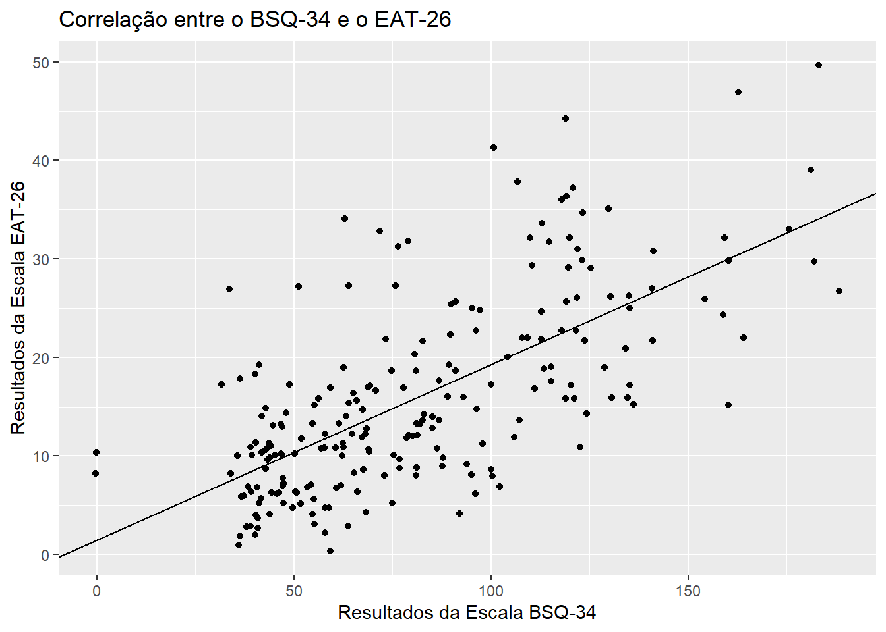
As conclusões indicam que pessoas mais novas (Entre 14 e 24) tem resultados mais elevados do que pessoas Entre 35 e 44 , Entre 45 e 54 e Entre 55 e 64. Participantes Entre 25 e 34 também apresentam resultados maiores do que Entre 35 e 44, Entre 45 e 54 e Entre 55 e 64. Não houve diferença significativa Entre 14 e 24 e Entre 25 e 34, bem como Entre 35 e 44 e Entre 45 e 54 e Entre 55 e 64. Finalmente, participantes Entre 45 e 54 e Entre 55 e 64 também não tiveram resultados significativamente diferentes.
12.20 Execução no JASP
Para executar o post hoc no JASP, é necessário clicar em Post Hoc tests na parte esquerda inferior do programa.
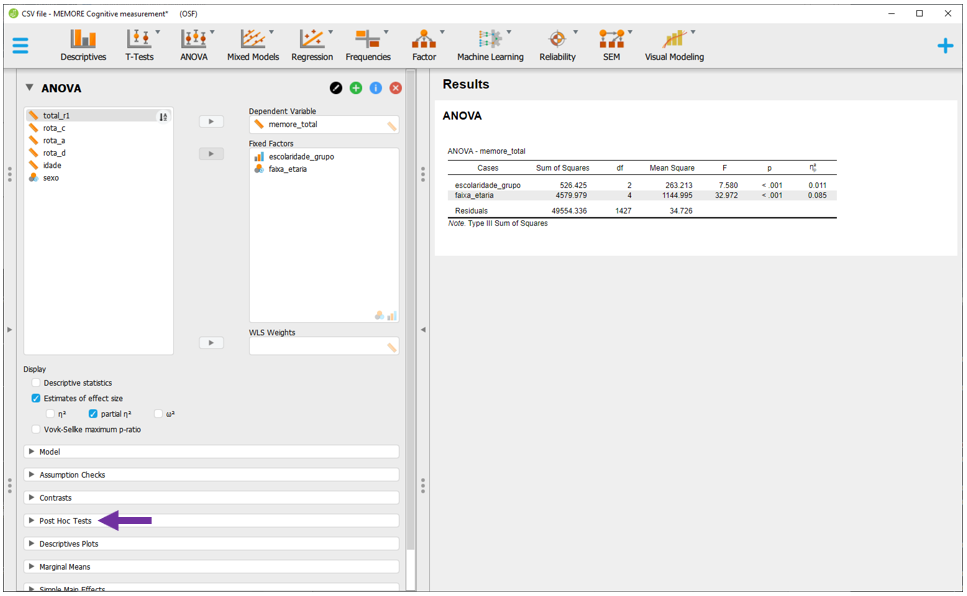
Em seguida, selecionar ambas as variáveis e clicar na seta para deslocá-las para o lado direito.

O JASP apresentará todas as comparações feitas em escolaridade e faixa_etaria, ajustando os resultados por todas as variáveis no modelo e corrigindo o valor de P. Por padrão, a correção de P é feita pelo método de Tukey, que pode ser alterada na seção Correction.
 Mesmo sem implementar a correção de Bonferroni, os achados são virtualmente idênticos aos obtidos anteriormente pelo R. É importante ter em mente que as comparações e os sinais podem ser invertidos para que os resultados tornem-se mais facilmente interpretáveis. Essa modificação não impacta em nada a interpretação dos achados.
Mesmo sem implementar a correção de Bonferroni, os achados são virtualmente idênticos aos obtidos anteriormente pelo R. É importante ter em mente que as comparações e os sinais podem ser invertidos para que os resultados tornem-se mais facilmente interpretáveis. Essa modificação não impacta em nada a interpretação dos achados.
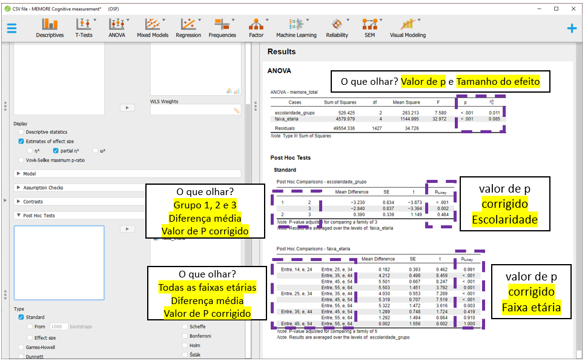
Gráficos são recursos úteis para descrição destes resultados. Eles podem ser feitos clicando em Descriptives Plots e, em seguida, arrastando a faixa_etaria para Horizontal axis e a escolaridade para Separated lines. Para colocar o erro padrão, é necessário clicar em Display error bars e Standard error.

Infelizmente, o JASP não realiza um gráfico completo dessa maneira na seção Descriptives, tal como apresentado. Por vezes, será necessário primeiro rodar integralmente a ANOVA para depois gerar esta apresentação. Quase sempre, o eixo X recebe a variável com maior quantidade de níveis.
12.21 Escrita dos resultados
Os resultados obtidos agora indicam que tanto a escolaridade como a faixa etária são significativamente relacionadas aos resultados obtidos na avaliação psicológica. Esses achados são convergentes ao que vem sendo demonstrado na literatura. Os resultados devem trazer os achados principais da ANOVA e as comparações pareadas de ambos os fatores, destacando os valores de P corrigidos. O estilo da escrita é baseado nas recomendações da American Psychological Association (APA).
Como escrever os resultados
Os dados obtidos na avaliação psicológica foram analisados por uma ANOVA de duas vias que investigou o efeito da escolaridade e da faixa etária nos resultados. Os achados permitiram concluir que tanto a escolaridade (F(2, 1427) = 7.58, p = 0.001, n2p = 0.01), como a faixa etária (F(4, 1427) = 32.972, p < 0.001, n2p = 0.08) tiveram efeito significativo nos resultados. Comparações pareadas foram realizadas e os valores de P foram corrigidos pela técnica de Bonferroni. Em relação à escolaridade, pessoas com nível fundamental, quando comparadas às pessoas de nível médio (Δ = -3.23, p < 0.001) e superior (Δ = -2.84, p < 0.001) apresentam performance significativamente menor. Não houve diferença entre participantes com ensino médio e ensino superior. Em relação à faixa etária, participantes entre 14 e 24 anos apresentam performance significativamente mais elevada do que participantes entre 35 e 44 (Δ = 4.21, p < 0.001), entre 45 e 54 (Δ = 5.50, p < 0.001) e entre 55 e 64 anos (Δ = 5.50, p < 0.001). Participantes entre 25 e 34 anos também apresentam performance significativamente superior do que participantes entre 35 e 44 anos (Δ = 4.03, p < 0.001), entre 45 e 54 (Δ = 5.32, p < 0.001) e entre 55 e 64 anos (Δ = 5.32, p < 0.001). Não houve diferença significativa na performance do grupo entre 14 e 24 anos do grupo entre 25 e 34, bem como entre o grupo entre 35 e 44 e 55 e 64. Também não houve diferença significativa entre os participantes com idades entre 45 e 54 daqueles com idade entre 55 e 64.
12.22 Resumo
- A ANOVA de duas vias pode ser modelada por um modelo aditivo ou não-aditivo
- O modelo aditivo não define interação entre os fatores, enquanto o não-aditivo sim
- Gráficos podem ser feitos antes das análises para auxiliar na interpretação dos resultados
- A interpretação dos resultados de um fator é ajustada pelo outro
- Os post hocs devem ser feitos individualmente para cada fator
12.23 ANOVA Fatorial
A ANOVA Fatorial é uma ANOVA de 2 (ou mais) vias, em que se estipulam interações entre os fatores. O conceito de interação se aplica em condições em que o modelo apresenta dois ou mais fatores e o efeito de um fator no desfecho depende do nível dos outros fatores. É possível perceber que este tipo de modelagem estatística costuma vir mais por perguntas específicas e teóricas do que por análises puramente exploratórias.
Na prática, na maior parte do tempo que um pesquisador pensa em uma ANOVA de 2 vias, o interesse justamente é o de testar se os fatores apresentam (ou não) uma interação. Talvez seja por isso que a maioria dos programas comerciais realizam, por padrão, uma ANOVA Fatorial quando se solicita uma ANOVA de 2 vias.
Conceitualmente, na ANOVA Fatorial, temos:
\[y_i = b_0 + b_1X{_1}_i + b_2X{_2}_i + b_3(X{_1}_i * X{_2}_i) + \epsilon_{i}\]
\(y_i\) representa a variável dependente
\(b_0\) é o intercepto (coeficiente linear)
\(b_1\) é a inclinação da primeira VI
\(X_1\) é a primeira variável independente
\(b_2\) é a inclinação da segunda VI
\(X_2\) é a segunda variável independente
\(b_3\) é a inclinação da interação
\(\epsilon_{i}\) é o erro/resíduo
Graficamente, a interação é tipicamente vista pelo cruzamento das linhas. O gráfico a seguir reproduz os resultados da pesquisa intitulada “Context-dependent memory in two natural environments: on land and underwater,” de Godden e Baddeley. Os pesquisadores pediram que participantes memorizassem um conjunto de palavras ou embaixo d’agua ou na terra. Após algum tempo, eles solicitaram que os participantes recordassem as palavras em um ambiente convergente ou divergente daquele inicial. Assim, era possível que os participantes aprendessem as palavras embaixo d’agua e depois tivessem de recordá-las em terra, por exemplo. Os resultados indicaram um efeito de interação.
set.seed(1)
data.frame(atribuicao = rnorm(200,10,0.5),
auto_estima = c("Embaixo d'agua","Em terra"),
resultado = c(rep("Embaixo d'agua", 100),
rep("Em terra", 100))) %>%
mutate(atribuicao = case_when(
auto_estima == "Embaixo d'agua" &
resultado == "Embaixo d'agua" ~ atribuicao*1.2,
auto_estima == "Em terra" &
resultado == "Embaixo d'agua" ~
atribuicao*0.9,
auto_estima == "Embaixo d'agua" &
resultado == "Em terra" ~ atribuicao*0.9,
auto_estima == "Em terra" &
resultado == "Em terra" ~ atribuicao*1.2)) %>%
ggplot(., aes(x = resultado, y = atribuicao,
color = auto_estima, group = auto_estima)) +
geom_point(size = 2,alpha=0.2) +
geom_line(size=1.2) +
ylim(c(7,14)) +
labs(x = "Ambiente de aprendizagem",
y = "Palavras lembradas",
color = "Ambiente da recordação") +
theme_bw()12.24 Execução no R
No R, será necessário alterar os contrastes para assegurar que os valores obtidos serão os mesmos dos programas comerciais e, consequentemente, irão ter a mesma interpretação. Para isso, basta rodar a linha de código a seguir:
options(contrasts = c("contr.helmert", "contr.poly"))Após esta etapa, todo o restante segue o mesmo padrão da feita anteriormente, iniciando pela codificação dos dados. É importante frisar que erros nesta etapa podem distorcer totalmente os resultados. Na variável faixa etária há rótulos para cada intervalo, tornando a interpretação bastante fácil e intuitiva. Na variável escolaridade, se utilizou valores de 1 a 3 para identificar o ensino fundamental, médio e superior.
ds <- ds %>%
mutate(escolaridade_grupo = factor(escolaridade_grupo),
faixa_etaria = factor(faixa_etaria))Os dados apresentam casos ausentes na variável faxa etária e escolaridade. Muitas ações podem ser feitas para lidar com esta condição. No entanto, apenas para finalidade pedagógica, esses valores não serão utilizados nestas análises de agora.
ds <- ds %>%
filter(!is.na(faixa_etaria) & !is.na(escolaridade_grupo))A apresentação de tabelas e gráficos que possibilitem uma primeira descrição dos dados é importante e deve ser realizado. Na tabela a seguir, as linhas irão reunir a faixa etária, enquanto as colunas reunirão a escolaridade.
ds %>%
group_by(escolaridade_grupo, faixa_etaria) %>%
summarise_at(vars(memore_total), lst(n=~n(), mean, sd)) %>%
pivot_wider(names_from = escolaridade_grupo, #indexador unico
names_sep = "_", #pode ser removido
values_from = c(n:sd)) %>% #organizar valores
pander(., split.table = Inf)| faixa_etaria | n_1 | n_2 | n_3 | mean_1 | mean_2 | mean_3 | sd_1 | sd_2 | sd_3 |
|---|---|---|---|---|---|---|---|---|---|
| Entre 14 e 24 | 2 | 240 | 580 | 5 | 12.94 | 11.8 | 1.414 | 5.377 | 5.81 |
| Entre 25 e 34 | 13 | 112 | 189 | 6.308 | 12.62 | 11.77 | 7.25 | 7.088 | 6.066 |
| Entre 35 e 44 | 26 | 93 | 69 | 5.769 | 6.882 | 9.246 | 6.308 | 5.128 | 6.251 |
| Entre 45 e 54 | 15 | 50 | 28 | 4.8 | 5.92 | 7.643 | 4.057 | 4.517 | 6.843 |
| Entre 55 e 64 | 3 | 5 | 9 | 5.333 | 5.6 | 6.667 | 6.11 | 3.847 | 8.544 |
Diferente do proposto na ANOVA de 2 vias aditiva, o gráfico agora deve ser o mais completo o possível, indicando as três variáveis que estão sendo trabalhadas: escolaridade, faixa etária e memore_total. Tipicamente, no eixo X se coloca a VI com mais níveis, enquanto no agrupador (ou cluster), se coloca a VI com menos.
ggplot(ds, aes(x = faixa_etaria, y = memore_total,
color = escolaridade_grupo,
group = escolaridade_grupo)) +
stat_summary(geom = "line", fun = mean, size=1.5) +
labs(x = "Faixa etária", y = "Resultados",
color = "Escolaridade")
O gráfico parece indicar que a performance no teste varia tanto em função da idade, como em função da escolaridade do participante. Por exemplo, pessoas entre 14 e 24 anos, bem como entre 25 e 34 anos com ensino médio apresentam o desempenho mais elevado quando comparadas com os outros participantes. No entanto, isso começa a se alterar aos 35 anos. Para estes participantes e aqueles mais velhos, o ensino superior parece ser o principal determinante.
Agora, formalmente a modelagem estatística será feita. Os passos devem ser exatamente os mesmos executados anteriormente, incluindo a verificação de pressupostos e interpretação dos resultados. Para realizar a ANOVA Fatorial, é possível contar com a função lm ou aov. Aqui, a escolha da lm foi apenas por conveniência e o vetor mod_escolaridade_faixa_etaria_fatorial irá armazenar os resultados.
mod_escolaridade_faixa_etaria_fatorial <- lm(memore_total ~
escolaridade_grupo *
faixa_etaria, ds)Repare que não é preciso descrever integralmente a equação na linha de código. Ao usar o símbolo *, o R já faz o restante.
A tabela padronizada da ANOVA Fatorial, disponível na maioria dos pacotes comerciais, é a seguinte:
| Fonte de variação | Soma dos Quadrados | Graus de liberdade | Quadrado médio | Estat. F |
|---|---|---|---|---|
| Fator (A) | Entre (SS(A)) | K(A)-1 | MS(A) = SS(A)/ K-1 |
F = MS(A)/MSW |
| Fator (B) | Entre (SS(B)) | K(B)-1 | MS(B) = SS(B)/ K-1 |
F = MS(B)/MSW |
| Interação (AB) | Entre (SS(AB)) | (K(A)-1)*(K(B)-1) | MS(AB) = SS(AB)/ (K(A)-1)*(K(B)-1) |
F = MS(AB)/MSW |
| Resíduo | Dentro (SSW) | N-(K(A)*K(B)) | MSW = SSW/ N-(K(A)*K(B)) |
Posto isso, os resultados obtidos são:
apaTables::apa.aov.table(mod_escolaridade_faixa_etaria_fatorial)$table_body %>%
pander(., split.table = Inf)| Predictor | SS | df | MS | F | p | partial_eta2 | CI_90_partial_eta2 |
|---|---|---|---|---|---|---|---|
| (Intercept) | 9803.04 | 1 | 9803.04 | 284.65 | .000 | ||
| escolaridade_grupo | 335.13 | 2 | 167.56 | 4.87 | .008 | .01 | [.00, .01] |
| faixa_etaria | 949.77 | 4 | 237.44 | 6.89 | .000 | .02 | [.01, .03] |
| escolaridade_grupo x faixa_etaria | 684.88 | 8 | 85.61 | 2.49 | .011 | .01 | [.00, .02] |
| Error | 48869.45 | 1419 | 34.44 |
A interpretação de uma ANOVA Fatorial tem algumas heurísticas:
- Sempre se começa pela interação (ou seja, de baixo para cima)
- Caso a interação seja significativa, não se interpreta os efeitos principais
- Caso a interação não seja significativa, a interpretação é a mesma da ANOVA de 1 ou 2 vias, anteriormente descritas
No caso de agora, os achados indicam que o efeito da interação entre escolaridade e faixa etária é significativo (F(8, 1419) = 2.49, p = 0.011, n2p = 0.1, 90% CI [.00 .02]), bem como são também significativos os efeitos da escolaridade (F(2, 1419) = 4.87, p = 0.008, n2p = 01, 90% CI [.00 .01]) e da faixa etária (F(4, 1419) = 6.89, p < 0.001, n2p = 02, 90% CI [.01 .03]). Como a interação foi significativa, deve-se evitar a interpretação dos efeitos principais, uma vez que os níveis de um fator podem impactar na interpretação de outro.
Note que a métrica do tamanho do efeito é o \(\eta_p^2\) e já está na tabela. Sua interpretação é a mesma dos modelos mostrados anteriormente neste capítulo.
Da mesma forma que apresentado no decorrer deste capítulo, a validade da interpretação dos resultados depende dos pressupostos do modelo estatístico. A violação destes pressupostos distorce, limita ou invalida as interpretações teóricas propostas, uma vez que tanto o aumento do erro do tipo 1 (falso positivo), como do tipo 2 (falso negativo) podem ocorrer (Barker & Shaw, 2015; Ernst & Albers, 2017; Lix et al., 1996).
Normalidade: O QQ plot abaixo apresenta os valores teóricos e empíricos. Caso ambas as linhas estejam sobrepostas, isso apoia que o pressuposto da normalidade foi atendido. Neste caso, isso não parece ocorrer.
olsrr::ols_plot_resid_qq(mod_escolaridade_faixa_etaria_fatorial)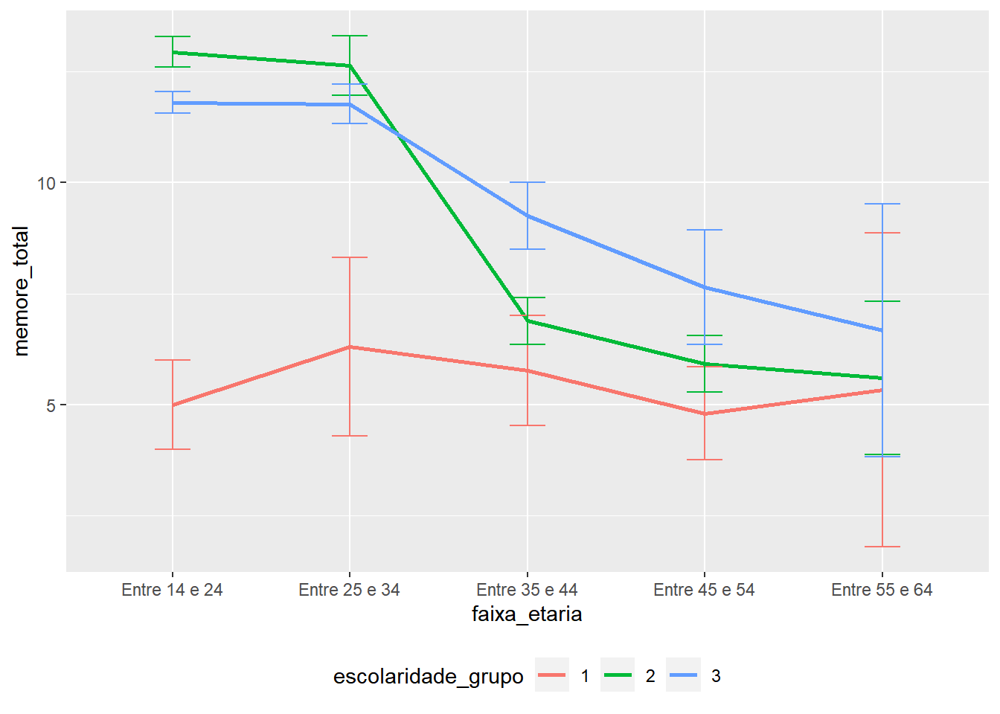
O Shapiro-wilk, Anderson-Darling e Jarque Bera também podem ser utilizado neste caso. A hipótese nula desses testes assume que os resíduos são normalmente distribuídos.
shapiro.test(residuals(mod_escolaridade_faixa_etaria_fatorial))##
## Shapiro-Wilk normality test
##
## data: residuals(mod_escolaridade_faixa_etaria_fatorial)
## W = 0.99412, p-value = 1.898e-05Os resultados de ambas as técnicas foram similares, indicando a violação da normalidade dos resíduos.
Homocedasticidade: Este pressuposto pode ser testado por um gráfico dos resíduos contra os valores previstos. O ideal é não encontrar padrões no gráfico.
olsrr::ols_plot_resid_fit(mod_escolaridade_faixa_etaria_fatorial)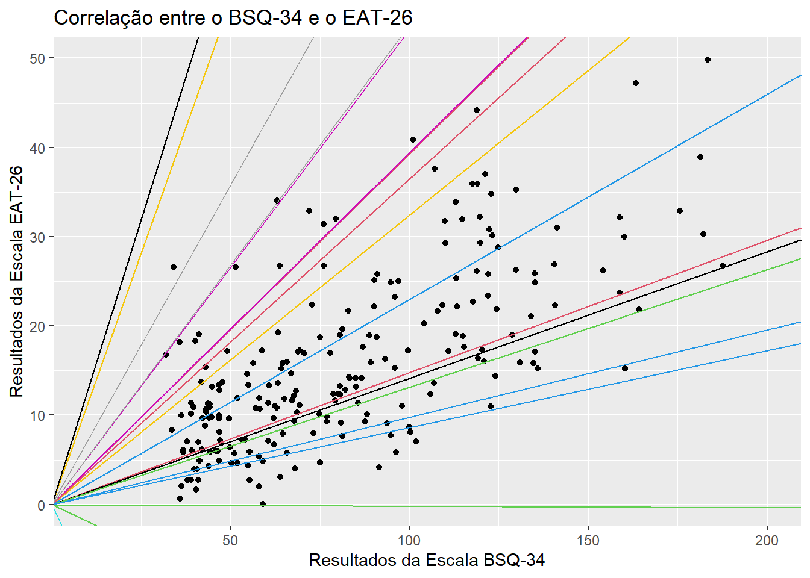
O teste de Levene, de Bartlett ou de Breusch-Pagan podem também serem utilzados de maneira formal. Eles estipulam \(H_0\) como homocedasticidade e, idealmente, não deve ser rejeitada.
olsrr::ols_test_breusch_pagan(mod_escolaridade_faixa_etaria_fatorial)##
## Breusch Pagan Test for Heteroskedasticity
## -----------------------------------------
## Ho: the variance is constant
## Ha: the variance is not constant
##
## Data
## ----------------------------------------
## Response : memore_total
## Variables: fitted values of memore_total
##
## Test Summary
## ----------------------------
## DF = 1
## Chi2 = 2.116801
## Prob > Chi2 = 0.1456906Os resultados obtidos pelo teste de Breusch Pagan Test indicaram que a homocedasticidade foi preservada.
Independência: Esse pressuposto frequentemente não é testado na ANOVA, apesar de ser uma exigência dos modelos lineares. De fato, uma vez que espera-se que os grupos sejam mutuamente excludentes, teria pouco sentido acreditar que os resíduos não fossem independentes.
12.25 Execução no JASP
Para executar a ANOVA Fatorial no JASP, será necessário baixar a base intitulada CSV file - MEMORE Cognitive measurement.csv. Após carregar os dados no programa, a seção Descriptives apresentará o gráfico inicial dos resultados.
Ao clicar nesta opção, será possível eleger as variáveis que irão ser analisadas e as variáveis que irão funcionar como agrupadores. Na prática, a lista Variables irá reunir as variáveis dependentes, enquanto a variável independente será colocada na seção Split. É importante atentar à opção Frequency tables (nominal and ordinal), que deve ser marcada quando o nível de medida da variável de interesse for nominal ou ordinal.
Em seguida, ao clicar na opção Plots, será possível selecionar o Boxplot e Boxplot element. O gráfico aparecerá abaixo da tabela e irá apresentar diferentes informações estatísticas da distribuição dos resultados da avaliação psicológica em função dos níveis de escolaridade. Uma visualização preliminar indica que pessoas com escolaridade mais elevada (níveis 2 e 3) apresentam resultados maiores do que pessoas com o primeiro nível de escolaridade.
Para alterar esta descrição, basta modificar as variáveis de interesse, colocando a faixa_etária, por exemplo. A visualização sugere um padrão, em que pessoas mais velhas apresentam menor desempenho.
Por padrão, o JASP não permite integrar os gráficos nesta seção. Isso será realizado posteriormente. Para executar a ANOVA, será necessário clicar na opção ANOVA, Classical e ANOVA.
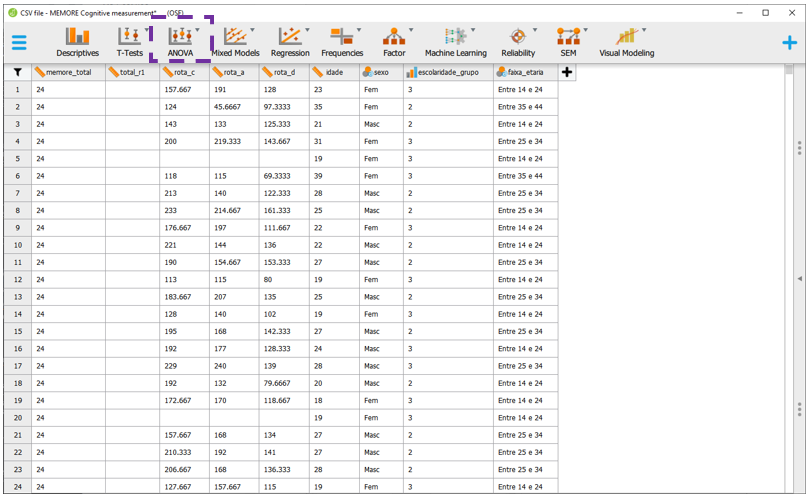
Essa etapa é similar a que foi feita na ANOVA de 1 via. Ao realizar isso, a tela a ser exibida será próxima à imagem a seguir.
O espaço de Fixed factors é o local onde as duas VIs deverão ser inseridas. O espaço Dependent Variable é o local onde a VD contínua irá ser inserida. Para realizar a ANOVA de duas vias, as variáveis escolaridade e faixa_etaria deverão ser arrastadas para Fixed factors. A variável memore_total deverá ser colocada em Dependent Variable.
O JASP automaticamente irá realizar as contas e apresentar os resultados da ANOVA Fatorial. Repare que, diferente do modelo visto anteriormente, agora a ANOVA reúne os resultados de escolaridade, faixa etária e escolaridade x faixa etaria.
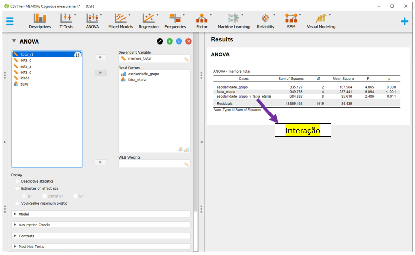
Pragmaticamente, o valor de P é o indicador costumeiramente utilizado para tomar decisões inferenciais. Os valores são exatamente os mesmos obtidos anteriormente na modelagem pelo R, indicando que o efeito da interação entre escolaridade e faixa etária é significativo (F(8, 1419) = 2.49, p = 0.011), bem como são também significativos os efeitos da escolaridade (F(2, 1419) = 4.87, p = 0.008) e da faixa etária (F(4, 1419) = 6.89, p < 0.001). Como a interação foi significativa, deve-se evitar a interpretação dos efeitos principais, uma vez que os níveis de um fator podem impactar na interpretação de outro.
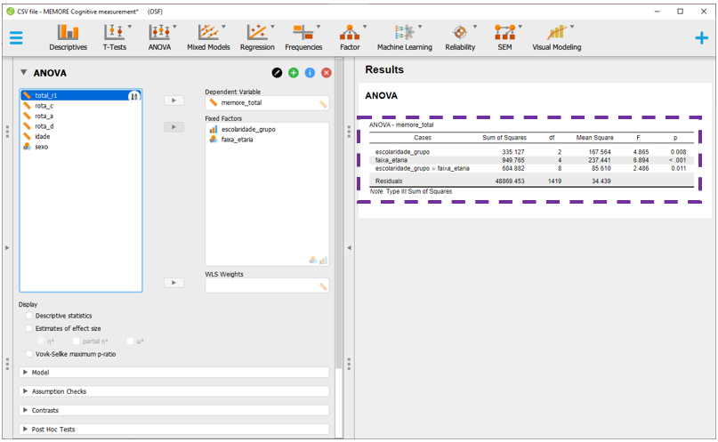
Esta tabela inicial não apresenta o tamanho do efeito e também não indica se o modelo respeitou ou violou os pressupostos. Para verificar se os pressupostos de normalidade e homocedasticidade foram respeitados, é necessário clicar em Assumption checks.
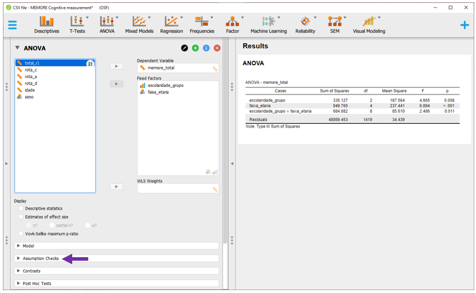
As opções Homogeneity tests e Q-Q plot of residuals deverão ser marcadas. Repare que pela impressão visual, a normalidade não foi mantida. Além disso, a homocedasticidade foi também violada. É importante ter uma atenção que os resultados do JASP foram divergentes dos resultados do R. Isso se dá pelo teste de homocedasticidade utilizado. No R, o teste foi o breusch Pagan, enquanto no JASP foi o de Levene.
Existem algumas saídas para isso, que vão desde modificar a modelagem até não corrigir tais condições e justificar metodologicamente esta escolha. No ambiente JASP, ambas as correções propostas para violação da homocedasticidade não são possíveis para uma ANOVA de 2 vias (incluindo a Fatorial). Assim, mesmo com ambas as violações, o modelo utilizado não apresentará nenhum ajuste.
Antes de voltar à interpretação da ANOVA, é necessário inserir o tamanho do efeito. Para isso, basta clicar em Estimatives of effect size e, em seguida, no eta quadrado parcial (\(η_p^2\)). Diferente de uma ANOVA de 1 via, os resultados do \(η_p^2\) serão diferentes do (\(η^2\)). Uma vez que a ANOVA Fatorial apresenta dois preditores, o \(η_p^2\) informa a variância explicada por cada uma das variáveis após excluir a variância explicada pelas outras.
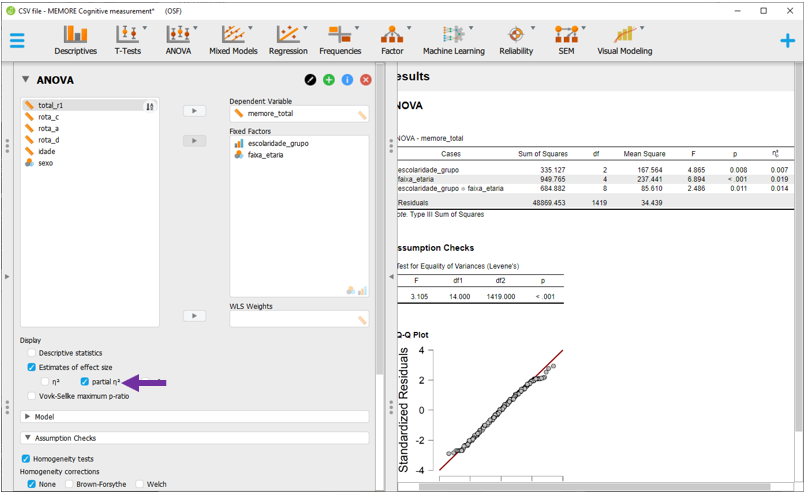
Agora, a interpretação agora pode ser feita integralmente. O valor de P irá indicar se a hipótese nula foi rejeitada ou não e o tamanho do efeito irá indicar a relevância da possível diferença, com interpretação disposta na tabela precedente neste capítulo.

Gráficos específicos são recursos úteis para descrição destes resultados. Eles podem ser feitos clicando em Descriptives Plots, arrastando a faixa_etaria para Horizontal axis e a escolaridade para Separated lines. Para colocar o erro padrão, é necessário clicar em Display error bars e Standard error.

Infelizmente, o JASP não realiza um gráfico completo dessa maneira na seção Descriptives, tal como apresentado. Por vezes, será necessário primeiro rodar integralmente a ANOVA para depois gerar esta apresentação. Quase sempre, o eixo X recebe a variável com maior quantidade de níveis.
12.26 Escrita dos resultados
Os resultados serão escritos apresentando os achados principais da ANOVA, destacando se o efeito da interação foi significativo ou não. O estilo da escrita é baseado nas recomendações da American Psychological Association (APA).
Como escrever os resultados
Os dados obtidos na avaliação psicológica foram analisados por uma ANOVA Fatorial para investigar o efeito da escolaridade, faixa etária, e de uma interação entre esses dois fatores nos resultados. Os resultados concluíram que a interação entre os fatores foi significativa (F(8, 1419) = 2.486, p = 0.011, n2p = 0.014), bem como a escolaridade (F(2, 1419) = 4.865, p = 0.008, n2p = 0.007) e a faixa etária (F(4, 1419) = 2.6.894, p < 0.001, n2p = 0.019).
12.27 Resumo
- A ANOVA Fatorial é um modelo feito para testar se os fatores apresentam ou não uma interação
- A interpretação do modelo deve começar pela interação. Caso significativa, não se interpreta os efeitos principais
- Os gráficos costumam ser ótimos recursos para entender o padrão dos resultados de maneira rápida
De forma análoga ao que aconteceu nos outros exemplos, os resultados até aqui obtidos não indicam quais níveis em que as diferenças podem existir. Testes post hoc são necessários para responder à esta pergunta
12.28 Post hoc
Normalmente, os post hocs são feitos após o pesquisador olhar os gráficos e os resultados obtidos, o que justifica este nome. As comparações Post hoc de uma ANOVA Fatorial podem ser feitas de duas maneiras, a depender do interesse do pesquisador. É possível comparar todos os níveis presentes em ambas as variáveis ou comparar todos os níveis de uma variável específica, enquanto outra é mantida constante. No primeiro caso, um exemplo seria a comparação de pessoas com ensino fundamental entre 14 e 24 anos contra pessoas com ensino superior entre 35 e 44 anos. No segundo caso, a comparação ocorreria entre todas as faixas de escolaridade em pessoas entre 14 e 24 anos ou pessoas entre 25 e 34 anos, etc.
Os programas estatísticos comerciais tendem a realizar o segundo formato de análise, em que todas as interações intra-níveis são feitas após manter um nível de outro fator constante. Uma hipótese é que essa escolha ocorre para prevenir o erro do tipo 2. Uma vez que as correções para valor de P implementadas dependem da quantidade de comparações feitas, ao se comparar todos os níveis de um fator contra todos os níveis de outro fator, seria pouco provável ter resultados significativos.
Neste caso, o post hoc será feito para todos os níveis de escolaridade com pessoas na faixa etária Entre 14 e 24. Em seguida, novamente todos os níveis de escolaridade serão comparados com pessoas na faixa etária Entre 25 e 34 e assim por diante. Essa escolha reflete o que foi apresentado no gráfico introdutório desta seção. O vetor post_hoc_fatorial será computado e armazenará os resultados.
post_hoc_fatorial <- emmeans(mod_escolaridade_faixa_etaria_fatorial,
pairwise ~ escolaridade_grupo |
faixa_etaria, adj = "bonferroni")
post_hoc_fatorial$contrasts %>% data.frame %>% pander()| contrast | faixa_etaria | estimate | SE | df | t.ratio | p.value |
|---|---|---|---|---|---|---|
| 1 - 2 | Entre 14 e 24 | -7.942 | 4.167 | 1419 | -1.906 | 0.1706 |
| 1 - 3 | Entre 14 e 24 | -6.797 | 4.157 | 1419 | -1.635 | 0.3068 |
| 2 - 3 | Entre 14 e 24 | 1.145 | 0.4504 | 1419 | 2.542 | 0.03335 |
| 1 - 2 | Entre 25 e 34 | -6.317 | 1.719 | 1419 | -3.674 | 0.0007432 |
| 1 - 3 | Entre 25 e 34 | -5.46 | 1.683 | 1419 | -3.245 | 0.003611 |
| 2 - 3 | Entre 25 e 34 | 0.8578 | 0.6998 | 1419 | 1.226 | 0.6614 |
| 1 - 2 | Entre 35 e 44 | -1.112 | 1.302 | 1419 | -0.8545 | 1 |
| 1 - 3 | Entre 35 e 44 | -3.477 | 1.35 | 1419 | -2.575 | 0.03039 |
| 2 - 3 | Entre 35 e 44 | -2.365 | 0.9324 | 1419 | -2.536 | 0.03396 |
| 1 - 2 | Entre 45 e 54 | -1.12 | 1.728 | 1419 | -0.6483 | 1 |
| 1 - 3 | Entre 45 e 54 | -2.843 | 1.878 | 1419 | -1.514 | 0.3908 |
| 2 - 3 | Entre 45 e 54 | -1.723 | 1.385 | 1419 | -1.244 | 0.6414 |
| 1 - 2 | Entre 55 e 64 | -0.2667 | 4.286 | 1419 | -0.06222 | 1 |
| 1 - 3 | Entre 55 e 64 | -1.333 | 3.912 | 1419 | -0.3408 | 1 |
| 2 - 3 | Entre 55 e 64 | -1.067 | 3.273 | 1419 | -0.3259 | 1 |
O gráfico dessa vez será feito pela função emmip do pacote emmeans, que deve apresentar os mesmos resultados obtidos na tabela.
emmip(mod_escolaridade_faixa_etaria_fatorial,
escolaridade_grupo ~ faixa_etaria, CIs = TRUE)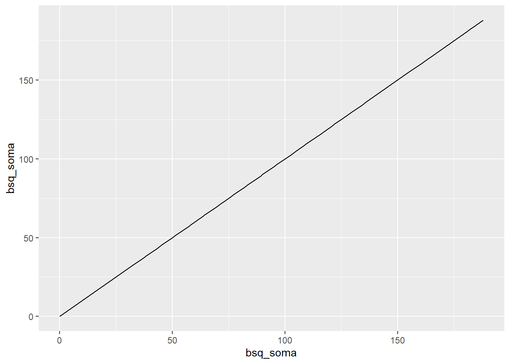
Entre as conclusões possíveis, se constata, de maneira contraintuitiva, que pessoas entre 14 e 24 anos com ensino médio apresentam performance maior do que pessoas com ensino superior (Δ = 1.145). Por sua vez, não há diferença na performance entre pessoas entre 25 e 34 anos que possuem o ensino médio ou ensino superior. No entanto, pessoas que tem essa idade, mas apresentam o ensino fundamental possuem performance significativamente menor do que seus pares com ensino médio (Δ = -6.317) ou superior (Δ = -5.46). Pessoas entre 35 e 44 anos com ensino superior apresentam performance mais elevada do que seus pares com ensino médio (Δ = 2.365) ou fundamental (Δ = 3.477).
12.29 Execução no JASP
Para executar o post hoc no JASP, é necessário clicar em Post Hoc tests na parte esquerda inferior do programa.
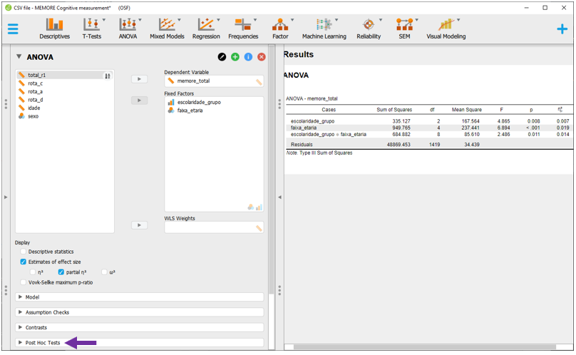
Em seguida, selecionar todas as variáveis e clicar na seta para deslocá-las para o lado direito.
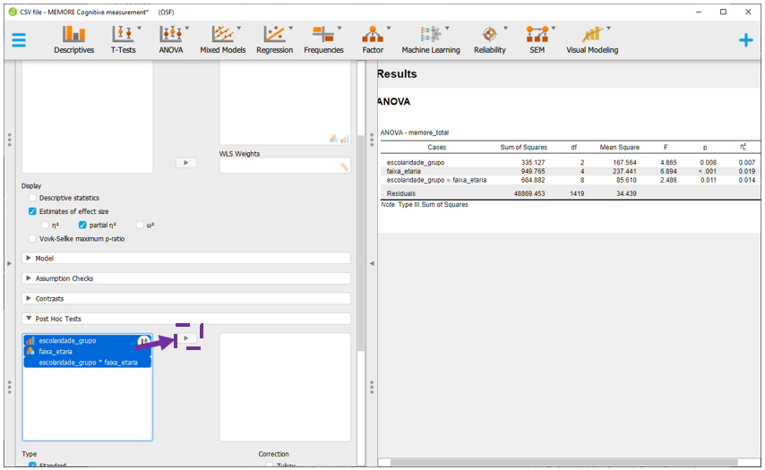
O JASP apresentará todas as comparações feitas em escolaridade, faixa_etaria e escolaridade x faixa etária, ajustando os resultados por todas as variáveis no modelo e corrigindo o valor de P. Por padrão, a correção de P é feita pelo método de Tukey, que pode ser alterada na seção Correction.
A interpretação principal é para interação escolaridade x faixa etária. No entanto, diferente do R, nesta versão do JASP não é possível reproduzir a análise feita em que a comparação entre todos os níveis de um fator é realizada enquanto se mantém o outro constante. Essa condição pode impactar um pouco na interpretação dos resultados, uma vez que os valores de P serão mais altos do que os previamente encontrados.
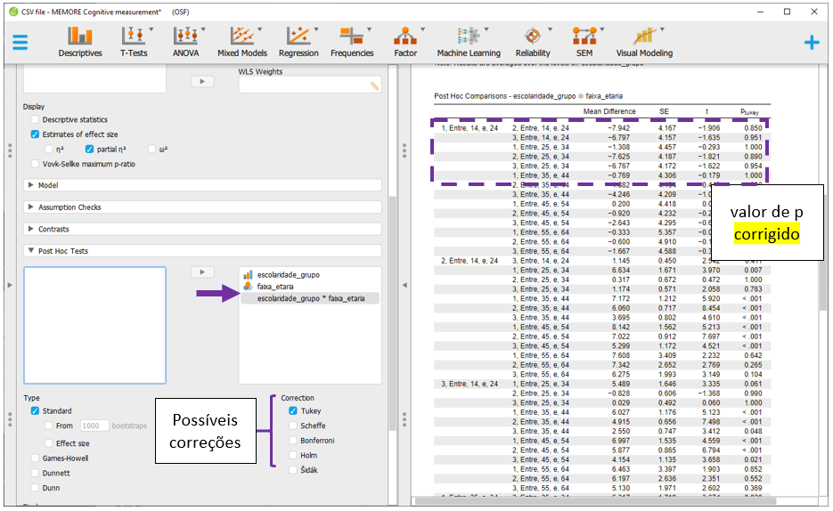
O gráfico feito anteriormente é um forte candidato a também ser inserido para auxiliar a visualização dos achados. A interpretação dos resultados pode ser feita considerando o valor de P, o tamanho do efeito e as comparações pareadas.
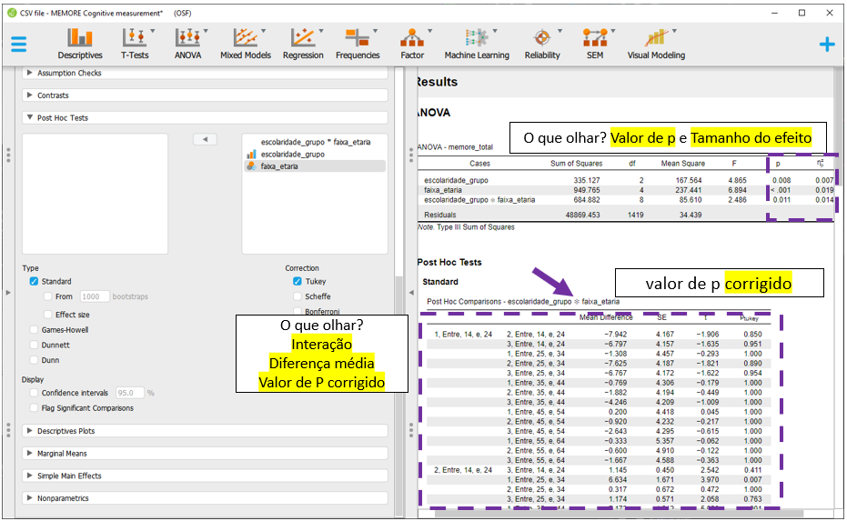
12.30 Escrita dos resultados
Os resultados serão escritos apresentando os achados principais da ANOVA, destacando se o efeito da interação foi significativo ou não e as comparações pareadas. O estilo da escrita é baseado nas recomendações da American Psychological Association (APA). Como os resultados do R e do JASP foram um pouco diferentes nas comparações pareadas, o R será utilizado como principal.
Como escrever os resultados
Os dados obtidos na avaliação psicológica foram analisados por uma ANOVA Fatorial para investigar o efeito da escolaridade, faixa etária, e de uma interação entre esses dois fatores nos resultados. Os resultados concluíram que a interação entre os fatores foi significativa (F(8, 1419) = 2.486, p = 0.011, n2p = 0.014), bem como a escolaridade (F(2, 1419) = 4.865, p = 0.008, n2p = 0.007) e a faixa etária (F(4, 1419) = 2.6.894, p < 0.001, n2p = 0.019). Em situações em que a interação é significativa os efeitos principais não são interpretados, já que os resultados podem depender de níveis específicos de cada uma das variáveis. As comparações pareadas foram feitas entre todos os níveis de escolaridade se mantendo a faixa etária constante e ajustando o valor de P pela técnica de Bonferroni. Pessoas entre 14 e 24 anos com ensino médio apresentam performance superior que seus pares com ensino superior (Δ = 1.145, p = 0.003). Pessoas entre 25 e 34 anos, com nível fundamental, têm performance significativamente mais baixa do que seus pares com ensino médio (Δ = -6.317, p < 0.001) e superior (Δ = -5.46, p < 0.001). Finalmente, pessoas entre 35 e 44 anos com ensino superior tem performance significativamente maior do que aquelas com ensino fundamental (Δ = 3.447, p < 0.001) e médio (Δ = 2.365, p < 0.001).
É importante ter em mente que as comparações e os sinais podem ser invertidos para que os resultados tornem-se mais facilmente interpretáveis.
12.31 Questões
- (Retirado de Médico do Trabalho, BANPARÁ, ESPP, 2012) Uma determinada empresa deseja comparar a média de idade de seus trabalhadores, em três de suas filiais. O melhor teste estatístico para essa comparação é:
a) Teste t de Student pareado.
b) Análise de variância.
c) Teste do Qui-quadrado.
d) Diagrama de Pareto.
e) Estatística descritiva
Gabarito: 1-b